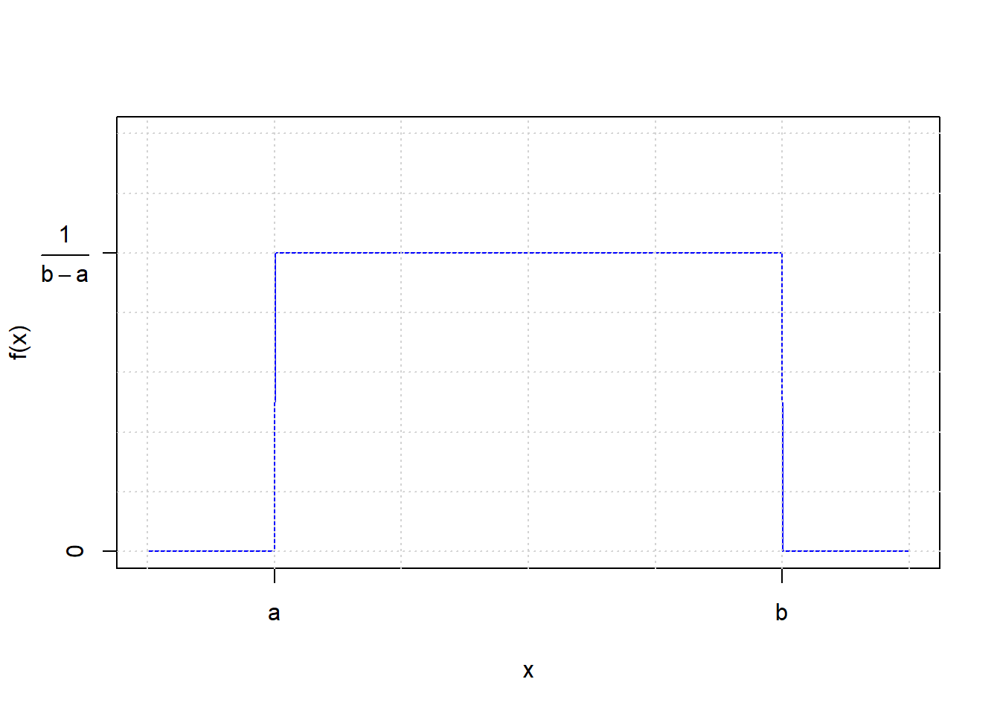
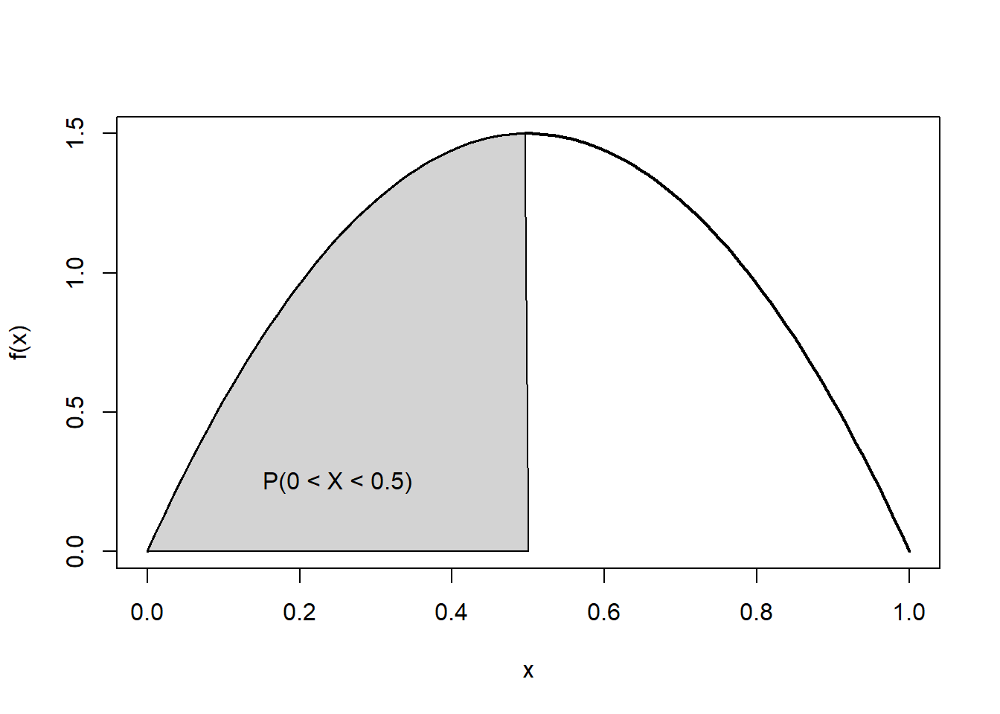
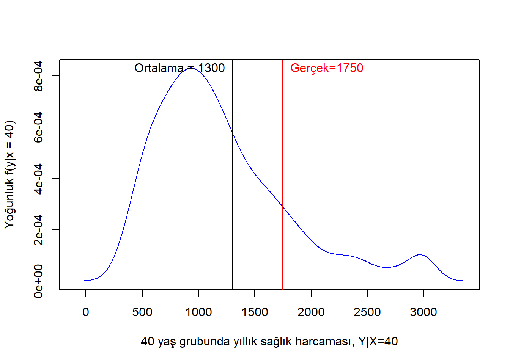

1 Sürekli Rassal Değişkenler
\[ \renewcommand{\E}{\mathbb{E}} \renewcommand{\P}{\mathbb{P}} \renewcommand{\Var}{\mbox{Var}} \renewcommand{\Cov}{\mbox{Cov}} \renewcommand{\plim}{\operatornamewithlimits{plim}} \renewcommand{\cd}{\overset{d}{\longrightarrow}} \renewcommand{\cp}{\overset{p}{\longrightarrow}} \renewcommand{\adistr}{\stackrel{a}{\sim}} \renewcommand{\ind}{1\hspace{-2.5mm}{1}} \]
Bir sürekli rassal değişken, reel sayılar doğrusu üzerinde herhangi bir değeri alabilir. Reel sayıların özellikleri gereği, birbirine ne kadar yakın olursa olsun iki reel sayı arasında sonsuz sayıda rasyonel ve irrasyonel sayı bulunur. Bu nedenle, sürekli rassal değişkenlerin alabileceği değerler sayılamaz veya listelenemez. Buna karşılık, önceki bölümde gördüğümüz gibi, kesikli rassal değişkenler belirli değerleri alabilir ve bu değerler genellikle kolayca sayılabilir veya listelenebilir. Varlık fiyatları, bir dönemdeki fiyatlar genel düzeyi, enflasyon oranı, hanelerin yıllık tasarrufu veya bir çeyrekte gerçekleşen ihracat tutarı gibi değişkenler sürekli rassal değişkenlere örnek olarak verilebilir.
Bu bölümde, sürekli rassal değişkenlerin dağılımlarını ve ilgili temel kavramları ele alacağız. Öncelikle, sürekli rassal değişkenlerin olasılık yoğunluk fonksiyonu ve birikimli dağılım fonksiyonu gibi temel bileşenleri tanıtılacaktır. Daha sonra, bu değişkenlerin beklenen değer ve varyans gibi önemli özet ölçümleri ele alınacaktır. Bölümün ilerleyen kısımlarında, birden fazla sürekli rassal değişkenin birleşik dağılımları incelenecek; marjinal, koşullu yoğunluk fonksiyonları ve bu değişkenler arasındaki bağımsızlık kavramı açıklanacaktır. Bu bölüm, sürekli rassal değişkenler konusuna kapsamlı bir giriş sağlarken, konunun ileri seviyede anlaşılması için sağlam bir temel oluşturmayı hedeflemektedir.
1.1 Sürekli Rassal Değişkenlerin Dağılımları
Bir \(X\) sürekli rassal değişkeni sayılamayacak kadar çok değerden birini alabilir ve herhangi bir reel sayıya eşit olma olasılığı sıfırdır. Kesikli rassal değişkenlerden farklı olarak, sürekli rassal değişkenlerin bir değere eşit olma olasılığı değil, belli bir aralık içine düşme olasılığı hesaplanır.
Örneğin, bir şehirdeki hanehalklarının aylık gelir dağılımını düşünelim. \(X\) bir hanenin aylık gelirini (TL cinsinden) temsil etsin. Hane gelirleri belli bir aralıkta herhangi bir değeri alabilir. Ancak, \(X\) değişkeninin tam olarak bir değere, örneğin 36,748.65 TL’ye eşit olma olasılığı sıfırdır. Bunun yerine, gelirin belirli bir aralıkta olma olasılığı daha anlamlı bir şekilde hesaplanabilir. Örneğin, bir hanenin gelirinin 36.000 TL ile 37.000 TL arasında olma olasılığı üzerinde durulabilir.
Sürekli rassal değişkenlerin belirli bir değere eşit olma olasılığının sıfır olması, kesikli rassal değişkenlerde gördüğümüz olasılık hesaplamalarından önemli bir farklılık oluşturur. Sürekli bir rassal değişken için olasılık hesaplamaları, bir noktadan ziyade belirli bir aralığa odaklanmayı gerektirir. Şimdi, bu kavramı daha iyi anlamak için pratik bir örnek üzerinden ilerleyelim.
1.1.1 Sürekli rassal değişkenlerin belirli bir değere eşit olma olasılığı neden sıfırdır?
Bir torbaya 0’dan 9’a kadar numaralandırılmış topları koyduğumuzu düşünelim. Torbadan rastgele bir top çekeceğiz ve rakamı kaydedeceğiz. Topu yerine koyacağız ve tekrar bir top çekeceğiz. Böylece ardarda yaptığımız çekilişler birbirinden bağımsız olur. Çektiğimiz rakamları kullanarak 0 ile 1 arasında bir sayı oluşturacağız. Çektiğimiz sayılar noktadan sonraki basamakları temsil edecek.
Birinci çekilişte olanaklı sayılar \(S=\{0.0,0.1,0.2,\ldots,0.9\}\) olur. Örneklem uzayında 10 temel sonuç bulunur ve bunların gerçekleşme olasılığı aynıdır. Öyleyse \[ \P(X=x) = \frac{1}{10},\quad x=0.0,0.1,\ldots,0.9 \] olarak yazılabilir. Bu dağılımı önceki bölümde incelemiştik (kesikli tekdüze dağılım).
Şimdi ikinci topu çekelim ve noktadan sonraki ikinci basamağı oluşturalım. Bu durumda örneklem uzayı 100 noktadan oluşacaktır: \[ S=\{0.00,0.01,0.02,\ldots,0.98,0.99\} \] Bu durumda her bir değerin gerçekleşme olasılığı \[ \P(X=x) = \frac{1}{100},\quad x=0.00,0.01,\ldots,0.99 \] Benzer şekilde üçüncü topu çekerek noktadan sonraki binler basamağını oluşturursak örneklem uzayı \[ S=\{0.000,0.001,0.002,\ldots,0.998,0.999\} \] 1000 elemandan oluşur. Herbirinin gerçekleşme olasılığı \[ \P(X=x) = \frac{1}{1000},\quad x=0.000,0.001,\ldots,0.999 \] olur.
Çekilen rakam sayısı arttıkça, rastgele değişkenin alabileceği olası değerlerin sayısı üstel olarak artar. \(n\) çekişten sonra, olası değerlerin sayısı \(10^n\) olur. Örneğin, \(0.123456\) sayısının çekilme olasılığı \(0.000001\) olur.
Limitte rassal değişken 0 ile 1 arasında herhangi bir değeri alabilir ve artık listelenemez olur. Belirli bir değere eşit olma olasılığı \[ \P(X=x) =\lim_{n\rightarrow \infty} \left( \frac{1}{10} \right)^n = 0 \] olacaktır. Bu örnekteki 0 ile 1 arasında tanımlı \(X\) rassal değişkeni, aşağıda tekrar inceleyeceğimiz, sürekli tekdüze (uniform) dağılıma uyar.
\(X\) sürekli rassal değişkeni için tanım gereği belirli bir \(x\) değerine eşit olma olasılığı sıfır kabul edilebilir: \(\P(X=x)=0\). Bunun yerine sürekli rassal değişkenin belirli bir aralık içine düşme olasılığı hesaplanır. Kesikli rassal değişkenler için geliştirdiğimiz araçları (örneğin olasılık kütle fonksiyonunu) sürekli rassal değişkenlerin dağılım özelliklerini incelemekte kullanamayız.
1.1.2 Sürekli rassal değişkenlerin aralık olasılıkları
Bir torbaya üzerinde 0’dan 9’a kadar rakamlar olan topları koyarak 0 ile 1 arasında sayı çekme örneğimize geri dönelim. Yerine koyarak yaptığımız tesadüfi çekilişlerden hareketle \(0.8453923...\) gibi sayılar oluşturabileceğimiz öğrenmiştik. Bu rassal değişkene \(X\) diyelim. Bu deneyin örneklem uzayı 0 ile 1 arasındaki tüm reel sayılar kümesidir, yani \(x\in [0,1]\) yazılabilir. \(X\) sürekli olduğu için belirli bir değere eşit olma olasılığının 0 olduğunu öğrendik.
Şimdi \(X\) rassal değişkeninin belirli bir değerden küçük ya da eşit olma olasılığını bulmaya çalıştığımızı düşünelim. İlgilendiğimiz belirli değer \(x\) olsun. \(X\)’in tanım aralığı \(0\leq X \leq 1\) olduğu için bulmak isteğimiz aralık olasılığı aşağıdaki gibi yazılabilir:
\[
\P(0\leq X\leq x)=?
\]
Basitlik amacıyla birinci çekilişle başlayalım. Bu durumda olanaklı sonuçlar kümesinin \(S=\{0.0,0.1,0.2,\ldots,0.9\}\) olduğunu biliyoruz. Buradan hareketle belirli bir değeri, örneğin 0.3 değerini, aşmama olasılığı kaçtır? \[ \P(0\leq X\leq 0.3) = \P(X=0.0) + \P(X=0.1) + \P(X=0.2) + \P(X=0.3) = 0.4 \] olur.
Çekiliş sayısını arttıralım. Noktadan sonraki iki basamağı seçtiğimizi düşünelim. Örneğin birinci çekiliş \(a=3\) ve ikinci çekiliş \(b=5\) ise \(x=0.35\) olur. İlgilendiğimiz aralık olasılığı
\[
\P(0\leq X\leq 0.35)=?
\] olarak yazılabilir. \(X\)’in \(0.35\)’den küçük ya da eşit olma olasılığıyla ilgilendiğimize göre öncelikle deneyin örneklem uzayındaki noktaları belirlememiz gerekir. Örneklem uzayında (çekebileceğimiz tüm sayılar kümesi) 0.00’dan 0.99’a kadar 100 nokta (rakam) vardır. İlk çektiğimiz sayı 3 ise ikinci çektiğimiz sayının bir önemi olmaz çünkü sayı \(0.35\)’den küçük olacaktır. Bunu yapmanın toplam \(3\cdot 10=30\) farklı yolu vardır. İlk basamaktaki rakam 3 olduğunda ise 0.35’e eşit ya da daha küçük bir sayı elde etmenin toplam \(1\cdot 6=6\) yolu vardır. Öyleyse \(0\leq X\leq x\) olayı toplam \(30+6=36\) farklı yoldan gerçekleşebilir. Dolayısıyla ilgilendimiz olasılık \[
\P(0\leq X\leq 0.35)=36/100=0.36
\] olarak bulunur.
Çekiliş sayısını \(n=3\) yaparak \(X=0.abc\) biçiminde bir rassal sayı oluşturmak istersek olanaklı sonuçlar kümesinin 1000 olduğunu kolayca görebiliriz. İlgilendiğimiz sayı \(x=0.358\) ise bu değere eşit veya küçük sonuçların sayısı 359 olacağı için istenen olasılık \[ \P(0\leq X\leq 0.358)=0.359 \] olur.
Benzer biçimde 5 rakam çektiğimizde ilgili olasılık \(\P(0\leq X\leq 0.35847)=0.35848\), 10 rakam çektiğimizde ise \(\P(0\leq X\leq 0.3584736291)=0.3584736292\) olur. Basamak sayısı sonsuza giderken \(x\) ile \(\P(0\leq X\leq x)\) arasındaki fark kapanır ve limitte bu fark sıfır olur. Öyleyse limitte \[ \P(0\leq X\leq x)=x \] olacaktır.
Şimdi \(X\)’in herhangi iki sayı arasında kalma olasılığını bulmaya çalışalım: \[ \P(a\leq X\leq b)=? \] Örnek olarak \(\P(0.35 \leq X\leq 0.75)\) olasılığını bulalım. Yukarıda olduğu gibi yerine konarak 100 farklı sayı seçilebilir. \(0.35\)’e eşit ya da büyük ve \(0.75\)’e eşit ya da küçük sayılar toplam 41 farklı şekilde seçilebilir, öyleyse \[ \P(0.35 \leq X\leq 0.75)=0.41 \] olur (\(3\cdot 10+1\cdot 5+1\cdot 6=41\)). Sıfırdan sonraki basamak sayısı arttıkça bu olasılık \([a,b]\) doğru parçasının uzunluğuna eşit olur: \[ \P(a\leq X\leq b)=b-a \]
Bu sonuç doğru parçasının kendi sınırlarını içerip içermemesinden bağımsızdır. öyleyse \[ \P(a\leq X\leq b)=\P(a< X\leq b)=\P(a\leq X<b)=\P(a< X< b)=b-a \] yazılabilir.
Özetlersek, sürekli rassal değişkenlerin belirli bir değeri aşmama olasılığı \(\P(X<x)\) anlamlı bir şekilde hesaplanabilirken, belirli bir değere eşit olma olasılığı sıfırdır, \(\P(X=x)=0\). Bu nedenle olasılık kütle fonksiyonunu bu değişkenler için kullanamayız. \(X\)’in dağılımını betimlemekte kullandığımız temel araçlar olasılık yoğunluk fonksiyonu ve birikimli dağılım fonksiyonudur.
1.1.3 Olasılık Yoğunluk Fonksiyonu
Tanım 1.1 (Olasılık Yoğunluk Fonksiyonu) \(X\) sürekli rassal değişkeninin olasılık yoğunluk fonksiyonu (oyf) ya da kısaca yoğunluk fonksiyonu, \(f(x)\), aşağıdaki özellikleri taşıyan bir fonksiyondur: \[ 1.\quad f(x)\geq 0, ~~~~~~-\infty<x<\infty \tag{1.1}\] \[ 2.\quad \int_{-\infty}^{+\infty} f(x)dx = 1 \tag{1.2}\]
Pozitiflik: Birinci özelliğe göre \(X\)’in alabileceği tüm değerler için yoğunluk fonksiyonu değerleri, tıpkı kesikli ressal değişkenler için olasılık fonksiyonu değerleri gibi, negatif olamaz.
İntegralin 1 olması: İkinci özellik alt ve üst sınırları \(X\)’in değerler aralığı olan integralin 1’e eşit olduğunu söylemektedir. Başka bir deyişle, \(f(x)\) eğrisinin altında kalan alan bire eşittir (bkz. Şekil 1.1).
Şekil 1.1 farklı tanım aralıklarına ve biçimlere sahip bazı olasılık yoğunluk fonksiyonlarını göstermektedir. Simetrik, sağa ya da sola çarpık, kalın veya ince kuyruklu, çok modlu gibi çeşitli özelliklere sahip olsalar da her bir olasılık yoğunluk fonksiyonu her zaman yukarıdaki iki özelliği sağlamak zorundadır.
Olasılık yoğunluk fonksiyonunu \(f(x)\)’in aldığı değer 0 ile 1 arasında olmak zorunda değildir. Burada getirilen tek kısıt negatif değerler almamasıdır. Belirli bir \(x\) değerine karşılık gelen \(f(x)\), o değerin olasılığını değil yoğunluğunu verir. Herhangi bir pozitif sayıya eşit olabilen bu yoğunluk değerlerini kullanarak, ilgilendiğimiz bir aralıktaki olasılığı belirli integral yardımıyla hesaplayabiliriz.


\(a<b\) olmak üzere, \(a\) ve \(b\), \(-\infty<a<b<\infty\) özelliğini sağlayan herhangi iki reel sayı ise, \(X\)’in bu değerler arasında olma olasılığı alt sınırı \(a\), üst sınırı \(b\) olan belirli integralin değerine eşittir. Yani, \(X\)’in \(a\) ile \(b\) arasında olma olasılığı \(f(x)\)’in altında kalan ve sınırları \(a\) ile \(b\) tarafından belirlenmiş bölgenin alanına eşittir: \[ \P(a<X<b)=\int_a^b f(x)dx \tag{1.3}\] Tekil noktaların olasılıkları sıfır kabul edilebileceğinden \[ \P(a<X<b)=\P(a\leq X\leq b) \tag{1.4}\] yazılabilir. Bu olasılık \(f(x)\)’in altında kalan \(a\) ve \(b\) ile sınırlanmış bölgenin alanı olarak yorumlanabilir. Şekil 1.2 farklı olasılık yoğunluk fonksiyonları için tanımlanmış bazı aralık olasılıklarını göstermektedir. Belirli integralin çözümüyle bulunabilen bu aralık olasılıkları gri renkte taranmış bölgelerin alanına eşittir.
Örnek 1.1 (Sürekli Tekdüze (Uniform) Dağılım) \(X\) 0 ile 1 aralığında tanımlı uniform ya da tekdüze dağılıma sahipse olasılık yoğunluk fonsiyonu aşağıdaki gibi yazılır (kısaca, \(X\sim U(0,1)\)): \[ f(x)= \left\{ \begin{array}{ll} 1, & 0<x<1~ \hbox{ise;} \\ 0, & \hbox{değilse.} \end{array} \right. \tag{1.5}\]
Bunun bir oyf olma koşullarını sağladığı açıktır. \(x \in [0,1]\) için olasılık yoğunluk fonksiyonu \(f(x)\geq 0\) olduğu görülmektedir. Ayrıca bu aralıkta integral bire eşittir:
\[
\int_0^1 f(x)dx = 1
\] Uniform dağılım için aralık olasılıkları kolayca hesaplanabilir: \[
\P(a< X< b)=\int_a^b f(x)dx = b-a
\] Genel olarak \([a,b]\) aralığında tanımlı uniform dağılıma uyan \(X\) rassal değişkeninin, \(X\sim U(a,b)\), olasılık yoğunluk fonksiyonu şöyle olur: \[
f(x)=
\left\{
\begin{array}{ll}
\frac{1}{b-a}, & a<x<b~ \hbox{ise;} \\
0, & \hbox{değilse.}
\end{array}
\right.
\tag{1.6}\]
Şekil 1.3 \((a,b)\) aralığında tanımlı bir tekdüze rassal değişkenin olasılık yoğunluk fonksiyonunu göstermektedir.
Örnek 1.2 Öğrencilerin bir sınavı tamamlama süreleri 20 ile 40 dakika arasında tekdüze dağılıma uymaktadır. Buna göre bir öğrencinin sınavı bitirme süresinin
- 30 dakikadan az,
- 25 ile 35 dakika arasında
olma olasılıklarını bulunuz.
Çözüm
- Tekdüze olasılık yoğunluk fonksiyonunun tanımından hareketle (bkz Denklem 1.6) \[ f(x)= \left\{ \begin{array}{ll} \frac{1}{20}, & 20<x<40~ \hbox{ise;} \\ 0, & \hbox{değilse.} \end{array} \right. \] yazabiliriz. Buradan
bulunur.
- İstenen aralık olasılığı
olur. Şekil 1.4 bu aralık olasılıklarını göstermektedir.
Örnek 1.3 R’da runif() fonksiyonunu kullanarak 0-1 aralığından 100 gözlemlik bir örneklem çekin. Sınıf sayısının 5 olduğu bir histogram çizin ve her sınıfın olasılığını hesaplayın. Teorik olasılıklarla karşılaştırın. Gözlem sayısı arttıkça verilerden hesaplanan olasılıkların teorik aralık olasılıklarına yaklaştığını gösterin.
Çözüm
Önce veri kümesini türetelim ve hist() fonksiyonu ile histogram için gereken verileri elde edelim:
# (0,1) aralığında Uniform rassal değişken
set.seed(123)
data <- runif(100, min = 0, max = 1)
# Histogram bilgileri
bins <- 5
hist_data <- hist(data, breaks = bins,
probability = TRUE,
plot = FALSE)Aralık alt ve üst sınırları ile yoğunluk değerlerinden hareketle tekdüze rassal değişkenin bu alt aralıklar içine düşme olasılıklarını hesaplayabiliriz:
# aralık sınırları
alt = hist_data$breaks[1:5]
ust = hist_data$breaks[2:6]
# yoğunluk (dikdörtgenin boyu)
yogunluk = hist_data$density
# dikdörtgenlerin alanları
alan = yogunluk*(ust-alt)
teorik_yogunluk = rep(1,5)
teorik_olasilik = rep(0.2,5)
cbind(alt, ust, yogunluk, alan, teorik_yogunluk, teorik_olasilik) alt ust yogunluk alan teorik_yogunluk teorik_olasilik
[1,] 0.0 0.2 0.95 0.19 1 0.2
[2,] 0.2 0.4 1.00 0.20 1 0.2
[3,] 0.4 0.6 1.05 0.21 1 0.2
[4,] 0.6 0.8 1.10 0.22 1 0.2
[5,] 0.8 1.0 0.90 0.18 1 0.2Her bir aralık olasılığının 0.2 olduğunu biliyoruz. Ancak örnekleme hatalarından dolayı histogram üzerinden hesaplanan aralık olasılıkları bu değere eşit olmayabilir. Şekil 1.5 verinin histogramını, hesaplanan aralık olasılıklarını ve yoğunluk fonksiyonunu göstermektedir.
Şekil 1.6 gözlem sayısı arttıkça aralık olasılıklarının teorik olasılıklara yaklaştığını göstermektedir.
Örnek 1.4 \(0<X<1\) aralığında değerler alan bir \(X\) rassal değişkeni için aşağıdaki fonksiyon tanımlanıyor: \[ f(x)= \left\{ \begin{array}{ll} cx^2, & 0<x<1~ \hbox{ise;} \\ 0, & \hbox{değilse.} \end{array} \right. \] \(f(x)\)’in bir olasılık yoğunluk fonksiyonu olması için \(c\) kaç olmalıdır?
Çözüm
İki koşulun sağlanması gerekir. İlk olarak \(f(x)\geq 0\) olmalıdır. Bunun için \(c\geq 0\) olacağı görülebilir.
İkinci olarak \(x\)’in tanım aralığında integral 1 olmalıdır:
\[\begin{align*} \int_0^{1} c x^2 dx &= 1 \\ c\int_0^{1} x^2 dx &= 1 \\ \left. c\cdot \frac{x^3}{3} \right|_0^{1} &= 1 \\ c\cdot \frac{1}{3} & = 1 \end{align*}\]Buradan \(c=3\) bulunur. Bir fonksiyonun olasılık yoğunluk fonksiyonu olmasını sağlayan \(c\) gibi sabitlere entegrasyon sabiti ya da normalizasyon sabiti denir. Olasılık yoğunluk fonksiyonu \[ f(x)= \left\{ \begin{array}{ll} 3x^2, & 0<x<1~ \hbox{ise;} \\ 0, & \hbox{değilse.} \end{array} \right. \] olarak yazılabilir.
Şekil 1.7 bu rassal değişkenin olasılık yoğunluk fonksiyonunu göstermektedir. Bu şekilden görüldüğü gibi \(x\) tanım aralığı olan 0 ile 1 arasında değişirken, \(f(x)\) 0 ile 3 arasında değerler almaktadır. Her hangi bir \(x\) değerine karşılık gelen \(f(x)\) değeri o noktadaki yoğunluğu göstermektedir. \(x\)’in küçük değerleri için yoğunluk göreceli daha düşük değerler alırken, \(x\) 1’e yaklaştıkça yoğunluk artmaktadır. Yoğunluk ile olasılığın birbiriyle karıştırılmaması gerektiğini belirtmiştik. Verilmiş bir \(x\) değerinin gerçekleşme olasılığından ziyade, bir aralık içine düşme olasılıkları hesaplanabilir.
Örnek 1.5 Örnek 1.4’de verilen olasılık yoğunluk fonksiyonunu kullanarak \(X\)’in 0.4 ile 0.8 arasında kalma olasılığını bulun.
Çözüm
İstenen olasılık \(\P(0.4\leq X \leq 0.8)\) ya da \(\P(0.4< X < 0.8)\) biçiminde yazılabilir. Sınırlarının içerilmesinin önemi yoktur. Olasılık yoğunluk fonksiyonu ve aralık olasılıklarının tanımından hareketle \[ \P(0.4< X < 0.8)=\int_{0.4}^{0.8} 3x^2 \, dx \] yazabiliriz. \[ \int_{0.4}^{0.8} 3x^2 \, dx = \left[ x^3 \right]_{0.4}^{0.8} = 0.8^3 - 0.4^3 = 0.512 - 0.064 = 0.448 \] bulunur.
1.1.4 Birikimli Dağılım Fonksiyonu
Kesikli rassal değişkenlerde olduğu gibi bir sürekli rassal değişkenin nasıl dağıldığını betimlemenin bir yolu da belirli bir değeri aşmama olasılığını veren birikimli dağılım fonksiyonunu (bdf) bulmaktır. Bu fonksiyona kümülatif dağılım/olasılık fonksiyonu ya da kısaca dağılım fonksiyonu da denir.
Tanım 1.2 (Birikimli Dağılım Fonksiyonu (bdf)) \(X\) sürekli rassal değişkeninin birikimli dağılım fonksiyonu (ya da dağılım fonksiyonu), \(F(x)\), \(X\)’in alabileceği herhangi bir değer olan \(x\)’i aşmama olasılığını \(x\)’in bir fonksiyonu olarak verir: \[ F(x)=\P(X\leq x)=\int_{-\infty}^{x} f(t)dt \tag{1.7}\]
Bu fonksiyon her zaman 0 ile 1 arasında değerler alır: \(0\leq F(x)\leq 1\).
Kesikli rassal değişkenlerde \(x_j\leq x\) için tüm olasılıkları toplayarak birikimli olasılıkları buluyorduk. Sürekli rassal değişkenler için ise yukarıdaki integrali hesaplayarak birikimli olasılıkları elde edebiliriz. Yoğunluk fonksiyonundan farklı olarak \(F(x)\) bize bir olasılık verdiği için her zaman 0 ile 1 arasında bir değer alır. Birikimli dağılım fonksiyonu ile olasılık yoğunluk fonksiyonu arasındaki ilişki şöyledir: \[ f(x) = \frac{dF(x)}{dx} \tag{1.8}\] Birikimli dağılım fonksiyonunun birinci türevi olasılık yoğunluk fonksiyonunu verir. \(F(x)\), olasılık yoğunluk fonksiyonunun altında kalan \(x\) ile sınırlandırılmış bölgenin alanına eşittir.
Birikimli dağılım fonksiyonunun özellikleri şunlardır:
- \(F(x)\) monoton artan bir fonksiyondur: \[ F(-\infty)=0, \quad F(+\infty)=1 \tag{1.9}\]
Buna göre \(F(x)\), \(x\)’in azalmayan bir fonksiyonudur. \(x_1\leq x_2\) olmak üzere \[ F(x_1)\leq F(x_2), \quad x_1\leq x_2 \] koşulu her zaman sağlanır. \(x\) negatif sonsuza giderken \(F(x)\) sıfıra, \(x\) pozitif sonsuza giderken \(F(x)\) \(1\)’e yaklaşır.
- \(a<b\) için aralık olasılıkları \[ \P(a\leq X \leq b) = F(b)-F(a)= \int_a^bf(x)dx \tag{1.10}\] ile bulunabilir.
Bu özelliği (Denklem 1.10) daha yakından incelemek için \(X\) değer aralığını aşağıdaki gibi parçalara ayıralım: \[ -\infty <a < b <+\infty \]
Olasılık kurallarını kullanarak \[ \P(-\infty<X<+\infty) = \P(-\infty<X<a) + \P(a<X<b) + \P(b<X<+\infty) \tag{1.11}\] yazabiliriz. Olasılık yoğunluk fonksiyonu kullanılarak bu olasılıklar \[ \int_{-\infty}^\infty f(x)dx = \int_{-\infty}^a f(x)dx + \int_a^b f(x)dx + \int_b^{+\infty} f(x)dx \tag{1.12}\] şeklinde yazılabilir.
Şekil 1.9 \(X\)’in \(a\) değerinden küçük olma olasılığını oyf ve bdf üzerinde göstermektedir. Şeklin üzerindeki taranmış bölge \[ \P(-\infty <X \leq a) = \int_{-\infty}^a f(x)dx = F(a) \] olasılığını göstermektedir. Bu, birikimli dağılım fonksiyonundaki \(F(a)\) değerine karşılık gelir.
Benzer şekilde, Şekil 1.10 \(X\)’in \(b\) değerinden küçük olma olasılığını oyf ve bdf üzerinde göstermektedir. Şeklin üzerindeki taranmış bölge \[ \P(-\infty <X \leq b) = \int_{-\infty}^b f(x)dx = F(b) \] olasılığını göstermektedir. Bu, birikimli dağılım fonksiyonundaki \(F(b)\) değerine karşılık gelir. \(X\)’in \(b\)’den büyük olma olasılığı ise \[ \P(X>b) = 1-\P(X\leq b) \] ya da \[ \P(b\leq X<\infty) = \int_b^{+\infty} f(x)dx=1-F(b) \] olur. Şekil 1.10’de taranmış bölge \(X\)’in \(b\)’yi aşmama olasılığını veriyordu. Olasılık yoğunluk fonksiyonunun altında kalan tüm bölgenin alanı \(1\) olduğuna göre \(X\)’in \(b\)’den büyük olma olasılığı \(1-F(b)\)’ye eşittir.
Şekil 1.11 \(X\)’in \(a\) ve \(b\) arasında olma olasılığını göstermektedir. Bu aralık olasılığı \(F(b)\) ile \(F(a)\) arasındaki farka eşittir. Bunu göstermek için önce birikimli dağılım fonksiyonunu kullanarak \[ F(+\infty)-F(-\infty)=[F(a)-F(-\infty)] + P(a\leq X\leq b) + [F(+\infty)-F(b)] \tag{1.13}\] yazalım. \(F(+\infty)=1\) ve \(F(-\infty)=0\) olduğuna göre \[ 1 = F(a)-0+\P(a\leq X \leq b)+1-F(b) \tag{1.14}\] yazabiliriz. Buradan da \[ \P(a\leq X \leq b) = F(b)-F(a) \tag{1.15}\] bulunur.
Örnek 1.6 (Uniform (Tekdüze) Dağılım) \([0,1]\) aralığında tekdüze dağılıma uyan \(X\) rassal değişkeninin olasılık yoğunluk fonksiyonunu daha önce bulmuştuk (bkz. Örnek 1.1):
\[
f(x)=
\left\{
\begin{array}{ll}
1, & 0<x<1~ \hbox{ise;} \\
0, & \hbox{değilse.}
\end{array}
\right.
\] Şimdi \(X\sim U(0,1)\) için birikimli dağılım fonksiyonunu bulalım. Aslında bu örnekte uniform dağılım için dağılım fonksiyonunu da bulmuştuk ve \(P(0\leq X\leq x)=x\) olduğunu göstermiştik.
Birikimli dağılımı fonksiyonunun tanımından hareketle (bkz. Denklem 1.7):
\[\begin{align*} F(x) &= P(X\leq x) \\ &= \int_0^x dt \\ &= \left.t\right|_0^x \\ &= x, \quad 0\leq x \leq 1~ \hbox{aralığı için} \end{align*}\]bulunur. \(X\) için dağılım fonksiyonu şu şekilde yazılabilir: \[ F(x) = \left\{ \begin{array}{ll} 0, & x<0\hbox{;} \\ x, & 0\leq x\leq 1\hbox{;} \\ 1, & x>1\hbox{.} \end{array} \right. \tag{1.16}\]
Şimdi herhangi bir \([a,b]\) aralığında tanımlı bir uniform rassal değişken için dağılım fonksiyonunu bulalım (oyf için bkz. Denklem 1.6). Birikimli dağılım fonksiyonunun tanımından hareketle \[
\begin{array}{lll}
F(x) &=& P(X\leq x) \\
&=& \int_a^x \frac{1}{b-a} dt \\
&=& \left.\frac{t}{b-a}\right|_a^x \\
&=& \frac{x-a}{b-a}, \quad a\leq x \leq b~ \hbox{aralığı için}
\end{array}
\tag{1.17}\] bulunur. Böylece \(X\sim U(a,b)\)’nin birikimli dağılım fonksiyonu
\[
F(x) = \left\{
\begin{array}{ll}
0, & x<a\hbox{;} \\
\frac{x-a}{b-a}, & a\leq x\leq b\hbox{;} \\
1, & x>b\hbox{.}
\end{array}
\right.
\tag{1.18}\] olur.
Şekil 1.12 uniform birikimli dağılım fonksiyonunun grafiğini göstermektedir. \(F(x)\)’in her zaman 0 ile 1 arasında değerler aldığına ve \(x\) arttıkça azalmadığına ve monoton olarak arttığına dikkat ediniz.
Örnek 1.7 Örnek 1.4’de verilen olasılık yoğunluk fonksiyonuna \[ f(x)= \left\{ \begin{array}{ll} 3x^2, & 0<x<1~ \hbox{ise;} \\ 0, & \hbox{değilse.} \end{array} \right. \] sahip \(X\) rassal değişkeni için birikimli dağılım fonksiyonunu, \(F(x)\), bulunuz. Bu \(F(x)\)’i kullanarak \(\P(0.4<X<0.8)\) aralık olasılığını hesaplayınız.
Çözüm Denklem 1.7’de verilen birikimli dağılım fonksiyonu tanımından hareketle \[
\begin{array}{lll}
F(x) &=& \int_0^x 3t^2 dt \\
&=& \left. t^3 \right|_0^x \\
&=& x^3, \quad 0 < x < 1~ \hbox{aralığı için}
\end{array}
\]
bulunur. Buradan birikimli dağılım fonksiyonu aşağıdaki gibi yazılabilir: \[
F(x) = \left\{
\begin{array}{ll}
0, & x \leq 0\hbox{;} \\
x^3, & 0< x < 1\hbox{;} \\
1, & x\geq 1\hbox{.}
\end{array}
\right.
\]
İstenen aralık olasılığını hesaplamak için birikimli dağılım fonksiyonunun tanımından hareketle \[
\begin{array}{lll}
\P(0.4<X<0.8) &=& F(0.8) - F(0.4) \\
&=& 0.8^3 - 0.4^3 \\
&=& 0.448
\end{array}
\]
bulunur. Şekil 1.13 bu olasılığı birikimli dağılım fonksiyonunun grafiği üstünde göstermektedir.
Örnek 1.8 Aşağıda verilen fonksiyonu düşünelim. \[ f(x)= \left\{ \begin{array}{ll} e^{-x}, & 0<x<\infty~ \hbox{ise;} \\ 0, & \hbox{değilse.} \end{array} \right. \]
- Bunun bir olasılık yoğunluk fonksiyonu olduğunu gösterin.
- Bu fonksiyunun grafiğini çizin ve \(X>1\) olasılığı ile ilgili alanı işaretleyin.
- \(P(X>1)\) olasılığını hesaplayın.
- Birikimli dağılım fonksiyonu \(F(x)\)’i bulun.
Çözüm:
- Sorunun ilk bölümünde bu fonksiyonun bir oyf olup olmadığını göstermemiz istenmektedir. Olasılık yoğunluk fonksiyonları özelliklerini sağlayıp sağlamadığına bakalım:
- İlk olarak, \(f(x)\geq 0\) koşulunun \(0<x<\infty\) aralığındaki her \(x\) değeri için sağlandığı açıktır.
- Ayrıca, \(x\)’in değerler aralığında oyf’nin integralinin 1 olması gerekir. Aşağıdaki eşitliğin sağlanıp sağlanmadığını kontrol edelim: \[ \begin{array}{lll} \int_0^{\infty} e^{-x}dx &=& 1 \\ \left.-e^{-x}\right|_0^{\infty} &=& 1 \\ -e^{-\infty}-(-e^0) &=& 1\\ 0+1 &=& 1 \end{array} \] Burada \(-e^{-\infty}=\lim_{x\rightarrow \infty}-e^{-x}=0\) olarak düşünülmelidir. İkinci koşul da sağlandığına göre bu fonksiyon bir oyf’dir.
- Şekil 1.14 (a) bu oyf’nin grafiğini göstermektedir. \(P(X>1)\) olasılığı grafikte gösterilmiştir.
\(P(X>1)\) olasılığını hesaplayalım: \[ \begin{array}{lll} P(X>1) &=& \int_1^{\infty} e^{-x}dx \\ &=& \left.-e^{-x}\right|_1^{\infty} \\ &=& e^{-1}\\ &\approx & 0.36787 \end{array} \]
\[ \begin{array}{lll} F(x) &=& \int_0^x e^{-t}dt \\ &=& \left.-e^{-t}\right|_0^{x} \\ &=& -e^{-x}+e^0 \\ &=& 1-e^{-x} \end{array} \] Buradan birikimli dağılım fonksiyonu \[ F(x) = \left\{ \begin{array}{ll} 0, & x<0 \hbox{;} \\ 1-e^{-x}, & 0<x<\infty \hbox{.} \end{array} \right. \] olarak bulunur (bkz Şekil 1.14 (b)).
1.2 Beklenen Değer
Tanım 1.3 (Sürekli Rassal Değişkenlerin Beklenen Değeri) Olasılık yoğunluk fonksiyonu \(f(x)\) olan, \(-\infty <x<\infty\) aralığında tanımlı bir \(X\) sürekli rassal değişkeninin beklenen değeri aşağıdaki gibi tanımlanır: \[ \E(X) = \int_{-\infty}^\infty x f(x)dx. \tag{1.19}\]
Kesikli rassal değişkenlerde olduğu gibi, sürekli rassal değişkenler için beklenen değer, \(\E(X)\), yoğunluk fonksiyonunun merkezini, yani anakütle ortalamasını (\(\mu_X\)) gösterir. \(\E(X)\), \(X\)’in ölçü birimi cinsinden yoğunluk fonksiyonunun denge noktası olarak yorumlanabilir (bkz Şekil 1.15). \(X\) rassal değişkenini üreten süreç ya da deney birbirinden bağımsız olarak çok sayıda tekrarlanırsa, gözlemlenen değerlerin ortalaması beklenen değere eşit olur.
Beklenti işlemcisi, \(\E(\cdot)\), yine kesikli rassal değişkenlerde tanımlandığı gibi doğrusaldır ve matematiksel olarak aynı özelliklere sahiptir.
Örnek 1.9 Örnek 1.4’de verilen olasılık yoğunluk fonksiyonuna \[ f(x)= \left\{ \begin{array}{ll} 3x^2, & 0<x<1~ \hbox{ise;} \\ 0, & \hbox{değilse.} \end{array} \right. \] sahip olan \(X\) rassal değişkeninin beklenen değerini bulun.
Çözüm
Beklenen değerin tanımından hareketle \[ \E(X) = \int_0^1 x\cdot 3x^2 dx = \left[\frac{3}{4}x^4 \right]_{0}^{1}=\frac{3}{4} \] bulunur.
Tanım 1.4 (Sürekli Rassal Değişkenlerin Fonksiyonlarının Beklenen Değeri) Beklenen değer ya da beklenti tanımı \(X\)’in herhangi bir fonksiyonu için, \(g(x)\), genelleştirilebilir. \(g(x)\)’in beklenen değeri \[ \E\left[g(X)\right] =\int_{-\infty}^\infty g(x) f(x)dx \tag{1.20}\] olarak tanımlıdır.
Örnek 1.10 Önceki örneğe devam edelim. \(g(x) = x^2\) olsun. \(\E(X^2)=?\)
Çözüm
\(\E[g(X)]\)’in tanımından hareketle: \[ \E(X^2) = \int_0^1 x^2\cdot 3x^2 dx = \left[\frac{3}{5}x^5 \right]_{0}^{1}=\frac{3}{5} \] bulunur.
Örnek 1.11 Şimdi standart tekdüze dağılan \(X\) rassal değişkeninin, \(X\sim U(0,1)\), beklenen değerini bulalım. Olasılık yoğunluk fonksiyonunun \[ f(x)= \left\{ \begin{array}{ll} 1, & 0<x<1~ \hbox{ise;} \\ 0, & \hbox{değilse.} \end{array} \right. \] olduğunu biliyoruz. Beklenen değerin tanımını kullanarak \[ \E(X) = \int_0^1 xdx=\frac{1}{2} \] bulunur.
Benzer şekilde, \([a,~b]\) aralığında tekdüze dağılım, \(X\sim U(a,b)\), için beklenen değer
\[\begin{align*} \E(X) &= \int_a^b \frac{x}{b-a}dx \\ &= \frac{1}{b-a}\left[\frac{b^2-a^2}{2} \right] \\ &= \frac{(b-a)(b+a)}{2(b-a)} \\ &= \frac{a+b}{2} \end{align*}\]olur.
Şimdi \(X\sim U(a,b)\) rassal değişkeni için tanımlanan \(g(x)=x^2\) fonksiyonunun beklenen değerini bulalım:
\[\begin{align*} \E[g(x)] &= \int_a^b x^2 \frac{1}{b-a} \\ &= \frac{b^3-a^3}{3(b-a)} \\ &= \frac{(b-a)(b^2+ab+a^2)}{3(b-a)} \\ &= \frac{a^2+ab+b^2}{3} \equiv \E[X^2]. \end{align*}\]1.3 Varyans
Tanım 1.5 (Varyans) \(X\) sürekli rassal değişkeninin varyansı \(X\)’in beklenen değerinden (ya da anakütle ortalamasından) farkının karesinin beklenen değerine eşittir. Yani \(g(x)\)’i aşağıdaki gibi tanımlarsak \[ g(x)=(x-\E(X))^2\equiv (x-\mu_X)^2 \] \(X\)’in varyansı \(g(x)\)’in beklentisine eşittir: \[ \Var(X) \equiv \sigma_X^2 = \int_{-\infty}^{\infty} \left(x-\E(X)\right)^2 f(x)dx \tag{1.21}\] Varyans \(\Var(X)\) ya da \(\sigma_X^2\) ile gösterilir ve her zaman pozitif değerler alır (ya da sıfır olur).
İntegral özellikleri kullanılarak \(\Var(X)\) aşağıdaki gibi yazılabilir: \[ \begin{array}{lll} \Var(X) &=& \E\left[(X-\E(X))^2\right] \\ &=& \int_{-\infty}^{\infty} \left[x-\E(X)\right]^2 f(x)dx \\ &=& \int_{-\infty}^{\infty} x^2 f(x)dx + (\E(X))^2 \int_{-\infty}^{\infty} f(x)dx-2\E(X) \underbrace{\int_{-\infty}^{\infty} x f(x)dx}_{\E(X)} \\ &=& \int_{-\infty}^{\infty} x^2 f(x)dx - \left(\int_{-\infty}^{\infty} x f(x)dx\right)^2 \\ &=& \E(X^2) - (\E(X))^2 \end{array} \tag{1.22}\] Burada \(\int_{-\infty}^{\infty} f(x)dx=1\) ve \(\int_{-\infty}^{\infty} x f(x)dx=\E(X)\) özelliklerini kullandık.
Örnek 1.12 (Tekdüze dağılımın varyansı) \(X\sim U(a,b)\) için beklenen değeri bulmuştuk. Şimdi yukarıdaki ilişkiyi kullanarak varyansını bulalım.
\[\begin{align*} \Var(X) &= \E[(X-\E(X))^2] \\ &= \E(X^2)-[\E(X)]^2 \\ &= \frac{(a^2+ab+b^2)}{3}-\frac{(a+b)^2}{4}\\ &= \frac{(b-a)^2}{12} \end{align*}\]Örnek 1.13 Örnek 1.2’de öğrencilerin bir sınavı tamamlama süresi 20 ile 40 dakika arasında uniform dağılıma uyuyordu. Bu dağılımın varyansını ve standart sapmasını bulun.
Çözüm
\(b=40\) ve \(a=20\) olduğuna göre tekdüze dağılımın varyans formülünden hareketle \[ \Var(X) = \frac{(b-a)^2}{12}=\frac{(40-20)^2}{12}=33.33 \] standart sapma ise \[ \sigma = \sqrt{400/12}=5.77 \] olarak bulunur.
\(\E(X)=30\) ve \(E(X^2)=933.33\) olduğundan, kısayol formülünden hareketle de \[ \Var(X)=\E(X^2)-[\E(X)]^2 = 933.33-30^2=33.33 \] bulunabilir.
Örnek 1.14 Örnek 1.4’de verilen olasılık yoğunluk fonksiyonuna \[ f(x)= \left\{ \begin{array}{ll} 3x^2, & 0<x<1~ \hbox{ise;} \\ 0, & \hbox{değilse.} \end{array} \right. \] sahip \(X\) sürekli rassal değişkeninin varyansını ve standart sapmasını bulun.
Çözüm
\(\E(X)\) ve \(\E(X^2)\) daha önce bulunmuştu (bkz. Örnek 1.9 ve Örnek 1.10). Varyans formülünü kullanarak \[ \Var(X) = \E(X^2)-[\E(X)]^2 = \frac{3}{5} - \left(\frac{3}{4}\right)^2=\frac{3}{80} \] Buradan standart sapma \[ \sigma = \sqrt{\Var(X)}=\sqrt{3/80}=0.194 \] olur.
1.4 Momentler
Moment kavramını daha önce kesikli rassal değişkenler için tanımlamıştık. Bu bölümde sürekli rassal değişkenlerin momentlerini inceleyeceğiz.
Tanım 1.6 (Moment) Sürekli rassal değişken \(X\)’in \(k\)nci momenti \[ \mu_k=\E(X^k)=\int_{-\infty}^{\infty} x^k f(x) dx, \quad k=0,1,2,... \] \(k\)nci kuvvetinin beklenen değeri olarak tanımlanır.
Tanım 1.7 (Merkezi Moment) Sürekli r.d. \(X\)’in \(k\)nci merkezi momenti, \(X\)’in beklenen değerden (yani birinci momentten) farkının \(k\)nci kuvvetinin beklenen değeri olarak tanımlanır: \[ m_k=\E\left[(X-\mu_1)^k \right]=\int_{-\infty}^{\infty} (x-\mu_1)^k f(x) dx \quad k=0,1,2,... \]
Tanım 1.8 (Standart Moment) Sürekli r.d. \(X\)’in \(k\)nci standart momenti \[ \gamma_k=\frac{m_k}{\sigma^k} \quad k=0,1,2,... \] şeklinde tanımlanır. Burada \(\sigma\) anakütle standart sapmasıdır: \[ \sigma=\sqrt{\Var(X)} =\sqrt{\E\left[\left(X-\mu_1 \right)^2\right]} \]
Örnek 1.15 Örnek 1.4’de verilen olasılık yoğunluk fonksiyonuna \[ f(x)= \left\{ \begin{array}{ll} 3x^2, & 0<x<1~ \hbox{ise;} \\ 0, & \hbox{değilse.} \end{array} \right. \] sahip \(X\) sürekli rassal değişkeninin 3. ve 4. momentlerini bulun.
Çözüm:
Birinci ve ikinci momentleri daha önce bulmuştuk: \[ \E(X)=\int_0^1 x\cdot 3x^2dx = \frac{3}{4} \] \[ \E(X^2)=\int_0^1 x^2\cdot 3x^2dx = \frac{3}{5} \]
Üçüncü moment:
\[\begin{align*} \E(X^3) &= \int_0^1 x^3\cdot 3x^2dx \\ &= 3\int_0^1 x^5 dx \\ &= \frac{1}{2} \end{align*}\]ve dördüncü moment:
\[\begin{align*} \E(X^4) &= \int_0^1 x^4\cdot 3x^2dx \\ &= 3\int_0^1 x^6 dx \\ &= \frac{3}{7} \end{align*}\]olarak bulunur.
Alıştırma olarak 3. ve 4. merkezi momentleri ve standart momentleri bulunuz.
1.5 Üstel Dağılım
Üstel dağılım, istatistikte sıklıkla kullanılan bir süreç dağılımıdır. Bu dağılım genellikle, olaylar arasındaki bekleme sürelerini modellemek için kullanılır.
Üstel dağılıma uyan bir rassal değişkenin yoğunluk fonksiyonu şu şekilde tanımlanır: \[ f(x) = \lambda e^{-\lambda x},\quad x\geq 0 \tag{1.23}\] Burada \(\lambda>0\) üstel dağılımın oran parametresidir ve \(e=2.71828...\) olarak tanımlıdır.
Şekil 1.16 farklı \(\lambda\) parametrelerine sahip üstel yoğunluk fonksiyonlarını göstermektedir. Bu grafikteki üç eğri sırasıyla \(\lambda=0.5\), \(\lambda=1\) ve \(\lambda=2\) değerleri için çizilmiştir. Daha düşük \(\lambda\) değerlerinde, bekleme süresi daha uzun olur ve yoğunluk fonksiyonu daha geniş bir alana yayılır. Daha yüksek \(\lambda\) değerlerinde ise bekleme süresi daha kısadır ve yoğunluk fonksiyonu daha dar ve dik bir yapıya sahiptir. Üstel dağılım, bekleme sürelerinin modellenmesinde sıkça kullanılır. Örneğin, telefon çağrıları arasındaki süreler veya bir sistemdeki olaylar arasındaki bekleme süreleri gibi. Şekil 1.16 üstel dağılımın olayların gerçekleşme hızına (oran parametresine) bağlı olarak nasıl şekil değiştirdiğini açık bir şekilde göstermektedir.
Üstel dağılımın birikimli dağılım fonksiyonu aşağıda verilmiştir: \[ F(x) = \begin{cases} 1 - e^{-\lambda x}, & x \geq 0 \\ 0, & x < 0 \end{cases} \tag{1.24}\]
Üstel dağılımın beklenen değer ve varyansının \[ \mu = \frac{1}{\lambda}, \quad \sigma^2 = \frac{1}{\lambda^2} \] olduğu gösterilebilir. \(\mu\) iki olay arasındaki ortalama bekleme süresi olarak yorumlanır.
Üstel dağılımın alternatif bir formülasyonu ortalama bekleme süresini kullanır: \[ f(x) = \frac{1}{\mu} e^{- \frac{x}{\mu} },\quad x\geq 0 \tag{1.25}\]
Üstel dağılımın hafızasızlık özelliği vardır: belirli bir süre sonra gerçekleşen olayın olasılığı geçmişten bağımsızdır.
Örnek 1.16 Bir bankanın müşteri hizmetlerine gelen aramaların bekleme süresi üstel dağılımla modellenebilmektedir. Saat başına gerçekleşen olay sayısının 15 olduğu bilindiğine göre iki arama arasındaki bekleme süresinin ortalaması dakika cinsinden kaçtır? Bekleme süresinin \(1\) dakikadan az olma olasılığı kaçtır? Bekleme süresinin 5 dakikadan fazla olma olasılığı kaçtır?
Çözüm:
Burada \(X\), müşteri hizmetlerine gelen iki çağrı arasındaki dakika cinsinden bekleme süresi olsun. Üstel dağılımın oran parametresi \(\lambda\) birim zamanda gerçekleşen olay sayısını ifade eder. Saat başına 15 arama geldiğine göre, dakika başına arama sayısı \[ \lambda = \frac{15}{60} = 0.25\quad \text{dakika başına olay sayısı} \] olur. Öyleyse iki arama arasındaki ortalama bekleme süresi \[ \E(X)=\frac{1}{\lambda} = \frac{1}{0.25}=4~~ \mbox{dakika} \] olur. Üstel dağılımda bekleme süresinin ortalaması, oran parametresinin tersine eşittir.
Bekleme süresinin \(1\) dakikadan az olma olasılığını bulmak için birikimli dağılım fonksiyonunu kullanabiliriz: \[
\P(X\leq 1) = F(1,\lambda=0.25) = 1 - e^{(-0.25) (1)} \approx 0.22
\] bulunur. Şekil 1.17 (a) bu olasılığı yoğunluk fonksiyonu üzerinde göstermektedir. R’da bu olasılığı hesaplamak için pexp() fonksiyonu kullanılabilir:
pexp(q = 1, rate = 0.25)[1] 0.2211992Bekleme süresinin 5 dakikadan fazla olma olasılığı \[
\P(X>5) = 1-\P(X\leq 5) = 1-F(5)
\] ve birikimli dağılım fonkisyonundan hareketle: \[
1-F(5) = 1- 1 + e^{(-0.25) (5)} \approx 0.287
\] bulunur. Şekil 1.17 (b) bu olasılığı yoğunluk fonksiyonu üzerinde göstermektedir. R ile hesaplamayı yapalım:
# P(X > 5) = 1 - P(X < 5)
# = 1 - F(5)
1-pexp(q = 5, rate = 0.25)[1] 0.28650481.6 Sürekli Rassal Değişkenlerin Birleşik Dağılımları
1.6.1 Birleşik Olasılık Yoğunluk fonksiyonu
Tanım 1.9 (Birleşik olasılık yoğunluk fonksiyonu) \(X\) ve \(Y\) sürekli iki rassal değişken olsun. Bunların birleşik olasılık yoğunluk fonksiyonu (byf), \(f(x,y)\), aşağıdaki özellikleri sağlayan bir fonksiyondur:
\[ f(x,y)\geq 0,~~ -\infty<x<\infty,~~ -\infty<y<\infty \tag{1.26}\]
\[ \int_{-\infty}^{\infty}\int_{-\infty}^{\infty} f(x,y)dxdy=1 \tag{1.27}\]
\(X\) ve \(Y\) sürekli rassal değişkenlerinin \((a<X<b,~c<Y<d)\) ile tanımlanan bölgenin içinde olma olasılıkları \[ P(a<X<b,c<Y<d)= \int_{c}^{d}\int_{a}^{b} f(x,y)dxdy \tag{1.28}\] ile bulunur.
Birinci özelliğe (Denklem 1.26) göre yoğunluk fonksiyonunun değerleri negatif olamaz. İkinci özellik (Denklem 1.27) rassal değişken çiftinin tanım aralığında integralin bire eşit olduğunu belirtmektedir. Ortak olasılık yoğunluk fonksiyonu ile tanımlanan yüzeyin altında kalan hacmin bire eşit olması gerekir. Üçüncü özellik (Denklem 1.28) bu yüzey altında tanımlanan herhangi bir bölgenin olasılığının, bu düzlem parçasıyla fonksiyonun yüzeyi arasında kalan hacmine eşit olduğunu belirtmektedir. Şekil 1.18 örnek bir birleşik yoğunluk fonksiyonunu göstermektedir. Bu yüzeyin altında kalan hacim 1’e eşittir.
Örnek 1.17 (Birleşik olasılık yoğunluk fonksiyonu) Aşağıda verilen iki değişkenli fonksiyonun düşünelim: \[ f(x,y)=\left\{ \begin{array}{ll} k(x+y), &0<x<1,~0<y<2 \hbox{~ise;} \\ 0, & \hbox{değilse.} \end{array} \right. \] Bu fonksiyonunu bir birleşik olasılık yoğunluk fonksiyonu olmasını sağlayacak \(k\) sabit sayısını bulun. Daha sonra elde ettiğiniz byf’nu kullanarak \[ P\left(0<X<\frac{1}{2},~1<Y<2\right) \] olasılığını bulun.
Çözüm:
\(k\) sabitinin bulunması
Öncelikle \(f(x,y)>0\) koşulunun sağlanabilmesi için \(k>0\) olmalı. İkinci koşuldan hareketle bunun bir birleşik olasılık yoğunluk fonksiyonu olabilmesi için \[ \int_{-\infty}^{\infty}\int_{-\infty}^{\infty} f(x,y)dxdy=1 \] olması gerekir. Bu fonksiyonun tanımlı olduğu aralıklar \(0 < x < 1\) ve \(0 < y < 2\) olduğundan, integral sınırları bu aralıklar olacaktır:
\[ \int_{0}^{2}\int_{0}^{1} k(x+y)\, dx\, dy = 1 \]
Önce iç integral (\(x\) değişkenine göre) hesaplanır: \[ \int_{0}^{1} k(x+y)\, dx = k\left[\frac{x^2}{2} + xy\right]_{0}^{1} = k\left(\frac{1}{2} + y\right) \] \(x\) değişkenine göre integral aldığımız için bulduğumuz fonksiyon sadece \(y\) değişkenine bağlıdır.
Bu ifadeyi dış integral (\(y\) değişkenine göre) ile devam ettirelim:
\[ \int_{0}^{2} k\left(\frac{1}{2} + y\right)\, dy = k\left[\frac{y}{2} + \frac{y^2}{2}\right]_{0}^{2} = k(1 + 2) = 3k \]
Bu sonucun 1 olması gerektiğinden:
\[ 3k = 1 \Rightarrow k = \frac{1}{3} \]
Bu durumda, birleşik olasılık yoğunluk fonksiyonumuz:
\[ f(x,y)=\left\{ \begin{array}{ll} \frac{1}{3}(x+y), &0<x<1,~0<y<2~ \hbox{ise;} \\ 0, & \hbox{değilse.} \end{array} \right. \] olarak yazılabilir. Şekil 1.19 bu birleşik yoğunluk fonksiyonunun yüzey grafiğini göstermektedir.
Aralık olasılığının bulunması
Belirtilen aralık için olasılık, birleşik olasılık yoğunluk fonksiyonunun \(X\) ve \(Y\) için verilen sınırlar arasında integraline eşittir:
\[ P\left(0<X<\frac{1}{2},~1<Y<2\right) = \int_{1}^{2}\int_{0}^{\frac{1}{2}} f(x,y)\, dx\, dy \]
Bulduğumuz \(f(x,y) = \frac{1}{3}(x + y)\) fonksiyonunu yerine koyarak integrali hesaplayalım:
\[ P\left(0<X<\frac{1}{2},~1<Y<2\right) = \int_{1}^{2}\int_{0}^{\frac{1}{2}} \frac{1}{3}(x + y)\, dx\, dy \]
Önce iç integral (\(x\) değişkenine göre) hesaplanır:
\[ \int_{0}^{\frac{1}{2}} \frac{1}{3}(x + y)\, dx = \frac{1}{3} \left[\frac{x^2}{2} + xy\right]_{0}^{\frac{1}{2}} = \frac{1}{3} \left(\frac{1}{8} + \frac{y}{2}\right) \]
Bu ifadeyi dış integral (\(y\) değişkenine göre) ile devam ettirelim:
\[ \int_{1}^{2} \frac{1}{3} \left(\frac{1}{8} + \frac{y}{2}\right)\, dy = \frac{1}{3} \left[\frac{y}{8} + \frac{y^2}{4}\right]_{1}^{2} \] Bu işlemin sonucu \[ \frac{1}{3} \left[\left(\frac{2}{8} + \frac{4}{4}\right) - \left(\frac{1}{8} + \frac{1}{4}\right)\right] = \frac{1}{3} \left[\frac{1}{4} + 1 - \frac{1}{8} - \frac{1}{4}\right] \] istenen olasılık \[ P\left(0<X<\frac{1}{2},~1<Y<2\right)= \frac{1}{3} \times \frac{7}{8} = \frac{7}{24} \] olarak bulunur.
1.6.2 Marjinal olasılık yoğunluk fonksiyonu
Tanım 1.10 (Marjinal olasılık yoğunluk fonksiyonu) İki değişkenli bir birleşik olasılık yoğunluk fonksiyonundan hareketle marjinal (tekil ya da yanal) olasılık yoğunluk fonksiyonları (myf) aşağıdaki gibi bulunur: \[ f_X(x)=\int_{-\infty}^{\infty} f(x,y)dy \tag{1.29}\] \[ f_Y(y)=\int_{-\infty}^{\infty} f(x,y)dx \tag{1.30}\]
Burada \(f_X(x)\)’i bulurken \(y\) değişkenine göre, \(f_Y(y)\)’yi bulurken \(x\) değişkenine göre integral aldığımıza dikkat ediniz. Marjinal yoğunluk fonksiyonu sadece ilgili sürekli rassal değişkene bağlıdır.
Örnek 1.18 (Marjinal olasılık yoğunluk fonksiyonu) Örnek 1.17’de kullandığımız birleşik yoğunluk fonksiyonundan hareketle \(X\) ve \(Y\) rassal değişkenlerinin marjinal olasılık yoğunluk fonksiyonlarını bulalım.
Çözüm: \[ \begin{array}{lll} f_X(x) &=& \int_0^2 \frac{1}{3} (x+y)dy \\ &=& \frac{1}{3} \left.\left(xy + \frac{y^2}{2}\right) \right|_0^2 \\ &=& \frac{2}{3}\left(x+1\right) \end{array} \] Buradan hareketle \(X\) için moyf’nu şöyle yazılır: \[ f_X(x)=\left\{ \begin{array}{ll} \frac{2}{3}(x+1), & 0<x<1~\hbox{ise;} \\ 0, & \hbox{değilse.} \end{array} \right. \] Benzer şekilde \(Y\)’nin marjinal yoğunluğu için \(x\)’e göre integral alırız: \[ \begin{array}{lll} f_Y(y) &=& \int_0^1 \frac{1}{3}(x+y)\, dx \\ &=& \frac{1}{3} \left.\left(\frac{x^2}{2}+xy\right) \right|_0^1 \\ &=& \frac{1}{3}\left( \frac{1}{2} + y \right) \end{array} \] Buradan \(Y\)’nin marjinal yoğunluk fonksiyonu \[ f_Y(y)=\left\{ \begin{array}{ll} \frac{1}{3}(y+\frac{1}{2}), & 0<y<2~\hbox{ise;} \\ 0, & \hbox{değilse.} \end{array} \right. \] olur. Bu fonksiyonların gerçekten marjinal oyf olma özelliklerini taşıdıkları kolayca gösterilebilir.
1.6.3 Koşullu olasılık yoğunluk fonksiyonu
Tanım 1.11 (Koşullu olasılık yoğunluk fonksiyonu) \(f(x,y)\), \(f_X(x)\) ve \(f_Y(y)\), sırasıyla, \(X\)’in ve \(Y\)’nin birleşik yoğunluk ve marjinal yoğunluk fonksiyonları olsun. \(Y=y\) verilmişken \(X\)’in koşullu olasılık yoğunluk fonksiyonu \[ f(x \mid y)=\frac{f(x,y)}{f_Y(y)} \tag{1.31}\] olarak tanımlıdır. Benzer şekilde \(X=x\) verilmişken \(Y\)’nin koşullu yoğunluk fonksiyonu \[ f(y \mid x)=\frac{f(x,y)}{f_X(x)} \tag{1.32}\] olur.
Bu tanımlar olasılık bölümünde tanımladığımız koşullu olasılık kuralı ile uyumludur. \(A\) ve \(B\) herhangi iki olay olsun. \(A\) verilmişken \(B\)’nin koşullu olasılığı aşağıdaki gibi bulunabiliyordu: \[ P(B \mid A)=\frac{P(A\cap B)}{P(A)} \]
Örnek 1.19 (Koşullu olasılık yoğunluk fonksiyonu) Örnek 1.17’de verilen birleşik yoğunluk fonksiyonundan hareketle koşullu yoğunluk fonksiyonlarını bulun. Buradan hareketle \[ \P\left(X>\frac{1}{2} \mid Y=1 \right) \] ve \[ \P\left(1<Y<2 \mid X= \frac{1}{2} \right) \]
olasılıklarını bulun.
Çözüm
Birleşik olasılık yoğunluk fonksiyonu \[ f(x,y)=\left\{ \begin{array}{ll} \frac{1}{3}(x+y), &0<x<1,~0<y<2~ \hbox{ise;} \\ 0, & \hbox{değilse.} \end{array} \right. \] olarak verilmiştir. \(Y\)’nin marjinal yoğunluğunu \[ f_Y(y)=\left\{ \begin{array}{ll} \frac{1}{3}(y+\frac{1}{2}), & 0<y<2~\hbox{ise;} \\ 0, & \hbox{değilse.} \end{array} \right. \] daha önce bulmuştuk.
Öyleyse \(Y=y\) verilmişken \(X\)’in koşullu yoğunluk fonksiyonu \[ f(x \mid y)=\frac{f(x,y)}{f_Y(y)} = \frac{\frac{1}{3}(x+y) }{\frac{1}{3}(y+\frac{1}{2}) } \] olur. \(Y=1\) değeri veri iken koşullu yoğunluk \[ f(x \mid y=1)=\frac{f(x,y=1)}{f_Y(y=1)} = \frac{\frac{1}{3}(x+1) }{\frac{1}{3}(1+\frac{1}{2}) } = \frac{2}{3}(x+1) \]
\(Y=1\) verilmişken \(X\)’in \(1/2\)’den büyük olma olasılığı \(X\)’in koşullu yoğunluk fonksiyonundan hareketle bulunabilir: \[ \P\left(X>\frac{1}{2} \mid Y=1 \right)=\int_{0.5}^1 \frac{2}{3}(x+1)\,dx \] Böylece \[ \begin{array}{lll} \P\left(X>\frac{1}{2} \mid Y=1 \right) &=& \frac{2}{3} \left.\left(\frac{x^2}{2}+x\right) \right|_{0.5}^1 \\ &=& 0.5 \end{array} \] bulunur.
Benzer şekilde \(X=x\) verilmişken \(Y\)’nin koşullu yoğunluk fonksiyonu \[ f(y \mid x)=\frac{f(x,y)}{f_X(x)} = \frac{\frac{1}{3}(x+y) }{\frac{2}{3}(x+1) } \] olur. \(X=1/2\) değeri veri iken koşullu yoğunluk \[ f(y \mid x=1/2)=\frac{f\left(x=\frac{1}{2}, y\right)}{f_X\left(x=\frac{1}{2}\right)} = \frac{\frac{1}{3}\left(\frac{1}{2}+y\right) }{\frac{2}{3}\left(\frac{1}{2}+1\right) } = \frac{1}{3}y + \frac{1}{6} \] olur. Buradan istenen olasılık \[ \begin{array}{lll} \P\left(1<Y<2 \mid X= \frac{1}{2} \right) &=& \int_{1}^2 \left( \frac{1}{3}y + \frac{1}{6} \right) \,dy \\ &=& \left.\left(\frac{1}{6}y^2 + \frac{1}{6}y \right) \right|_{1}^2 \\ &=& \frac{2}{3} \end{array} \] olarak bulunur.
1.6.4 Koşullu beklenen değer
Tanım 1.12 (Koşullu beklenen değer) \(f(x,y)\), \(f_X(x)\) ve \(f_Y(y)\), sırasıyla, \(X\)’in ve \(Y\)’nin birleşik yoğunluk ve marjinal yoğunluk fonksiyonları olsun. \(X=x\) verilmişken \(Y\)’nin koşullu beklenen değeri \[ \E[Y\mid X=x] = \int_{-\infty}^{\infty} y\,f(y \mid x)\,dy=\int_{-\infty}^{\infty} y\,\frac{f(x,y)}{f_X(x)} dy \tag{1.33}\] olarak tanımlıdır. Koşullu beklenen değer \(X\)’e göre değişir. Doğrusal ya da doğrusal olmayan bir fonksiyon ile temsil edilebilir.
Benzer şekilde \(Y=y\) verilmişken \(X\)’in koşullu beklenen değerini de tanımlayabiliriz: \[ \E[X\mid Y=y] = \int_{-\infty}^{\infty} x\,f(x \mid y)\,dx=\int_{-\infty}^{\infty} x\,\frac{f(x,y)}{f_Y(y)} dx \tag{1.34}\]
Örnek 1.20 (Koşullu beklenen değer) Örnek 1.19’de incelediğimiz koşullu yoğunluk fonksiyonlarından hareketle \(Y\)’nin ve \(X\)’in koşullu beklenen değerlerini bulalım.
Tanımdan hareketle \(Y\)’nin koşullu beklentisi \[ \E[Y\mid X=x] = \int_{-\infty}^{\infty} y\,f(y \mid x)\,dy=\int_{0}^{2} y\,\frac{(x+y) }{2(x+1) } dy \] ya da \[ \E[Y\mid X=x] = \frac{1 }{2(x+1) } \int_{0}^{2} y\,(x+y)\, dy \]
Bunu çözmek için \(0<x<1\) tanım aralığında değer girmemiz gerekir. Örneğin \(X=1/2\) değeri verilmişken koşullu beklentiyi hesaplarsak: \[ \E\left[ Y\mid X=\frac{1}{2} \right] = \int_{0}^{2} y\,\frac{(\frac{1}{2}+y) }{2(\frac{1}{2}+1) } dy = \int_{0}^{2} \frac{1}{6}(y+2y^2)dy \] Buradan \[ \E\left[ Y\mid X=\frac{1}{2} \right] = \frac{11}{9}\approx 1.2 \] bulunur.
\(Y\)’nin koşullu beklentisini sadece \(X\)’in bir fonksiyonu olarak da ifade edebiliriz: \[ \E[Y\mid X=x] = \frac{1 }{2(x+1) } \int_{0}^{2} y\,(x+y)\, dy =\frac{1}{2(x + 1)} \left[ x \int_{0}^{2} y \, dy + \int_{0}^{2} y^2 \, dy \right] \] Buradan \[ \E[Y\mid X=x] = \frac{1}{2(x + 1)} \left[ x \cdot \frac{y^2}{2} \bigg|_{0}^{2} + \frac{y^3}{3} \bigg|_{0}^{2} \right]= \frac{1}{2(x + 1)} \left[ x \cdot 2 + \frac{8}{3} \right] \] \[ \E[Y\mid X=x] = \frac{2x}{2(x + 1)} + \frac{4}{3(x + 1)} = \frac{x}{x + 1} + \frac{4}{3(x + 1)} \] Bu fonksiyon \(X=1/2\)’de değerlenirse \[ E[Y | X = 0.5] = \frac{0.5}{0.5 + 1} + \frac{4}{3 \cdot (0.5 + 1)}=\frac{11}{9} \] olduğu görülebilir.
Şekil 1.20 bu koşullu beklenen değer fonksiyonunun grafiğini göstermektedir. Grafikte, \(\E[Y \mid X=x]\) koşullu beklentisi \(X\)’in bir fonksiyonu olarak gösterilmektedir. \(X=0.5\) noktasındaki değeri, \(\E[Y \mid X=0.5]=\frac{11}{9}\) olarak bir noktayla işaretlenmiştir.
Örnek 1.21 Bir kişinin yaşı (\(X\)) ile TL cinsinden yıllık sağlık masrafı (\(Y\)) arasındaki ilişki aşağıdaki doğrusal fonksiyon ile betimlenebilmektedir: \[ Y=500 + 20 X +\epsilon \] burada \(\epsilon\) yaşa koşullu ortalaması 0 ve standart sapması \(100\) olan bir rassal değişkendir: \(\E(\epsilon\mid X)=\E(\epsilon)=0\), \(\sigma=100\). 25 yaşında bir kişinin beklenen sağlık harcamasını bulun. 40 yaşında bir kişi için beklenen masraf kaçtır? Beklenen sağlık harcaması ile gerçek masraf (\(Y\)) arasındaki farkın neden sıfır olmayabileceğini tartışınız.
Çözüm:
\(Y\)’nin \(X=x\)’e koşullu beklenen değerini bulalım: \[ \E[Y\mid X] = 500 + 20 X + \E(\epsilon\mid X) = 500 + 20 X \] Buradan 25 yaşında birinin beklenen sağlık harcaması \[ \E[Y\mid X=25] = 500 + (20)\cdot (25) = 1000~ \text{TL} \] ve 40 yaşında birinin beklenen sağlık harcaması \[ \E[Y\mid X=40] = 500 + (20)\cdot (40) = 1300~ \text{TL} \] olarak bulunur.
Şekil 1.21 bireysel sağlık harcamalarının yaşa göre koşullu beklenen değerini göstermektedir. Yaşa göre beklenen harcamalar doğrusal bir biçimde artmaktadır. Bu doğru üzerindeki noktalar her hangi bir yaş için anakütledeki koşullu dağılımın ortalama değerleridir. Örneğin, rassal seçilmiş 40 yaşında birinin gerçek sağlık harcaması 1750 TL ise (grafikte kırmızı nokta) bu bireyin harcaması ilgili yaş grubundaki ortalamanın (1300 TL) üzerindedir. Bu fark \(\epsilon\) ile temsil edilmiştir.

Şekil 1.22 40 yaşındaki tüm bireylerin sağlık harcamalarının yoğunluk fonksiyonunu göstermektedir. Bu koşullu yoğunluk fonksiyonunun ortalaması 1300 TL olarak bulunmuştu. 40 yaşında bir bireyin sağlık harcaması bu değerden düşük ya da yüksek olabilir. Örneğimizde eğer gerçek değer 1750 TL ise bu bireyin ortalamadan daha yüksek harcamaya sahip olduğu anlamına gelir. Benzer şekilde 20 yaşındaki bireyler için de bir koşullu yoğunluk fonksiyonu çizilebilir.
1.6.5 Birikimli birleşik dağılım fonksiyonu
Tanım 1.13 (Birikimli birleşik dağılım fonksiyonu) İki değişkenli birikimli birleşik dağılım fonksiyonu \(X\) ve \(Y\)’nin verilmiş \(x\) ve \(y\) değerlerini aşmama olasılığını gösteren bir fonksiyondur: \[ F(x,y)=\P(X\leq x,~Y\leq y) =\int_{-\infty}^{y}\int_{-\infty}^{x} f(t,s)dtds \]
İkiden fazla rassal değişkenin olduğu durumda \[ F(x_1,x_2,\ldots,x_k)=\int_{-\infty}^{x_k}\int_{-\infty}^{x_{k-1}}\ldots \int_{-\infty}^{x_1} f(t_1,t_2,\ldots,t_k)dt_1dt_2,\ldots,dt_k \] yazılabilir.
Örnek 1.22 Örnek 1.17’de verilen birleşik yoğunluk fonksiyonundan hareketle birikimli birleşik dağılım fonksiyonunu bulalım.
Birleşik yoğunluk fonksiyonu aşağıdaki gibi verilmişti:
\[ f(x, y) = \frac{1}{3}(x + y), \quad 0 < x < 1, \, 0 < y < 2 \]
Birikimli birleşik dağılım fonksiyonu, \(F(x, y)\): \[ F(x, y) = \int_{0}^{y} \int_{0}^{x} \frac{1}{3}(u + v) \, du \, dv \]
Önce \(u\)’ya göre integrali hesaplayalım: \[ \int_{0}^{x} \frac{1}{3}(u + v) \, du = \frac{1}{3} \left[\frac{u^2}{2} + vu \right]_{0}^{x} = \frac{1}{3} \left(\frac{x^2}{2} + vx \right) \]
Şimdi \(v\)’ye göre: \[ F(x, y) = \int_{0}^{y} \frac{1}{3} \left(\frac{x^2}{2} + vx \right) dv = \frac{1}{3} \left[\frac{x^2v}{2} + \frac{v^2x}{2} \right]_{0}^{y} = \frac{1}{3} \left(\frac{x^2y}{2} + \frac{xy^2}{2} \right) \]
Böylece birleşik birikimli dağılım fonksiyonu
\[ F(x, y) = \frac{1}{6} \left(x^2y + xy^2 \right), \quad 0 < x \leq 1, \, 0 < y \leq 2 \] olarak bulunur. Sınır koşullarını dikkate alarak birleşik birikimli dağılım fonksiyonu aşağıdaki gibi yazılabilir: \[ F(x, y)=\left\{ \begin{array}{ll} 0, & x \leq 0,~ y \leq 0~\hbox{;}\\ \frac{1}{6} \left(x^2y + xy^2 \right), & 0<x< 1, \, 0<y<2~\hbox{;} \\ \frac{1}{6} y\left(1 + y \right), & x\geq 1, \, 0<y<2~\hbox{;} \\ \frac{1}{3} x\left(1 + x \right), & 0<x< 1, \, y\geq2~\hbox{;} \\ 1, & x\geq 1,~y\geq 2. \end{array} \right. \] Şekil 1.23 bu birikimli birleşik dağılım fonksiyonunun yüzey grafiğini göstermektedir.
Bu fonksiyondan hareketle \(X\)’in 0.5 veya daha küçük ve \(Y\)’nin 1 veya daha küçük değerler alma olasılığını hesaplayabiliriz:
\[ F(x, y) = \frac{1}{6} \left(x^2y + xy^2 \right) \] fonksiyonundan hareketle istenen olasılık: \[ \P(X\leq 0.5,~Y\leq 1)=F(0.5,~ 1)= \frac{1}{6} \left((0.5)^2\cdot 1 + 0.5\cdot 1 \right)=0.125 \] olarak bulunur. Şekil 1.24 bu olasılığı birleşik birikimli dağılım fonksiyonunun kontür grafiği üzerinde göstermektedir.
Birleşik birikimli dağılım fonksiyonu ile birleşik yoğunluk fonksiyonu arasındaki ilişki aşağıdaki gibi yazılabilir: \[ \frac{\partial^2 F(x,y)}{\partial x\partial y} = f(x,y) \] Yani birleşik dağılım fonksiyonunun ikinci türevi birleşik yoğunluk fonksiyonunu verir.
Önceki örnekte önce \(x\)’e göre kısmi türevi alalım: \[ \frac{\partial F(x,y)}{\partial x} = \frac{1}{6}(2xy+y^2) \] Bunun da \(y\)’ye göre kısmi türevini alırsak: \[ \frac{\partial^2 F(x,y)}{\partial x\partial y} = \frac{1}{3}(x+y)\equiv f(x,y) \] birleşik yoğunluk fonksiyonuna ulaşırız.
1.6.6 Bağımsızlık
Tanım 1.14 (İstatistiksel Bağımsızlık) Eğer birleşik olasılık yoğunluk fonksiyonları aşağıdaki gibi \[ f(x,y) =f_X(x)\cdot f_Y(y) \tag{1.35}\] marjinal yoğunlukların çarpımı olarak yazılabiliyorsa \(X\) ve \(Y\) rassal değişkenleri istatistik bakımından bağımsızdır denir.
Bu tanım genelleştirilebilir. \(X_1,X_2,\ldots,X_n\) rassal değişkenlerinin birleşik olasılık yoğunluk fonksiyonu, marjinal yoğunluk fonksiyonlarının çarpımı olarak yazılabiliyorsa, yani
\[\begin{align*} f(x_1,x_2,\ldots,x_n) &= f_1(x_1)\cdot f_2(x_2)\cdot ,\ldots,\cdot f_n(x_n) \\ &= \prod_{j=1}^n f_j(x_j) \end{align*}\]ise bu rassal değişkenler birbirinden bağımsızdır denir.
Örnek 1.23 (Bağımsızlık) Örnek 1.17’de verilen birleşik yoğunluk ve marjinal yoğunluk fonksiyonlarından hareketle \(X\) ve \(Y\)’nin bağımsız olup olmadığını bulalım.
Bunun için \[ f_X(x)\cdot f_Y(y) \stackrel{?}{=} f(x,y) \] olup olmadığını incelememiz gerekir. Marjinal yoğunluk fonksiyonlarını daha önce bulmuştuk. Bunları yerine koyarsak
\[ \begin{array}{lll} f_X(x)\cdot f_Y(y) &=& \frac{2}{3}(x+1) \frac{1}{3}(y+\frac{1}{2})\\ &\neq& f(x,y) \end{array} \] çarpımlarının birleşik yoğunluk fonksiyonuna eşit olmadığını görüyoruz. Öyleyse \(X\) ve \(Y\) rassal değişkenleri bağımsız değildir diyebiliriz. Başka bir deyişle, \(X\) ve \(Y\) değişkenleri birbirlerine bağımlıdır. \(X\)’in aldığı değerler \(Y\) için bilgi içerir. Benzer şekilde \(Y\)’nin aldığı değerler de \(X\) için bilgi içerir.
Örnek 1.24 (Bağımsızlık) Birleşik yoğunluk fonksiyonu aşağıdaki gibi tanımlanmıştır: \[ f(x,y) = \left\{ \begin{array}{ll} \frac{1}{9}, &1<x<4,~1<y<4~ \hbox{ise;} \\ 0, & \hbox{değilse.} \end{array} \right. \] \(X\) ve \(Y\)’nin istatistik bakımından bağımsız olup olmadıklarını gösteriniz.
Çözüm
Önce marjinal yoğunlukları bulalım: \[ f_X(x)=\int_1^4 \frac{1}{9}dy = \frac{1}{3} \] \[ f_Y(y)=\int_1^4 \frac{1}{9}dx = \frac{1}{3} \] Buradan \[ f(x,y)=\frac{1}{9}=f_X(x)\cdot f_Y(y)=\left(\frac{1}{3}\right) \left(\frac{1}{3}\right) \] koşulu sağlandığı için \(X\) ve \(Y\) rassal değişkenleri bağımsızdır.
Tanım 1.15 (Bağımsız rassal değişkenlerin birleşik birikimli dağılımları) \(X\) ve \(Y\) rassal değişkenleri birbirinden bağımsızsa bunların birleşik birikimli dağılım fonksiyonu marjinal birikimli dağılımların çarpımına eşittir: \[ F(x,y) = F(x)F(y) \]
Örnek 1.25 \(X\) ve \(Y\) birbirinden bağımsız ve 0 ile 1 arasında tekdüze dağılıma uyan rassal değişkenler olsun: \[ X\sim~Uniform(0,1),\quad Y\sim~Uniform(0,1), ~~\text{bağımsız} \] Bu rassal değişkenlerin birleşik birikimli dağılımını bulun.
Çözüm:
Bu rassal değişkenlerin marjinal birikimli dağılım fonksiyonları: \[ F(x) = \left\{ \begin{array}{ll} 0, & x<0 \\ x, & 0\leq x\leq 1~ \hbox{;} \\ 1, & x> 1 \hbox{.} \end{array} \right. \] \[ F(y) = \left\{ \begin{array}{ll} 0, & y<0 \\ y, & 0\leq y\leq 1~ \hbox{;} \\ 1, & y> 1 \hbox{.} \end{array} \right. \] Bu iki rassal değişken bağımsız olduğuna göre \[ F(x,y) = F(x)F(y)=xy,\quad 0\leq x\leq 1,~0\leq y\leq 1 \] olur. Sınır koşullarını da dikkate alarak: \[ F(x, y)=\left\{ \begin{array}{ll} 0, & x < 0,~ y < 0~\hbox{;}\\ xy, & 0\leq x\leq 1, \, 0\leq y\leq 1~\hbox{;} \\ y, & x>1, \, 0\leq y\leq 1~\hbox{;} \\ x, & y>1, \, 0\leq x\leq 1~\hbox{;} \\ 1, & x> 1,~y>1. \end{array} \right. \] buluruz.
1.6.7 Kovaryans
Kovaryans, iki sürekli rassal değişken arasındaki ilişkinin yönünü ve gücünü ölçen bir istatistiksel ölçüttür. Kovaryansın işareti, bu iki değişken arasındaki ilişkinin pozitif mi yoksa negatif mi olduğunu belirler. Pozitif bir kovaryans, bir değişkenin artışıyla diğerinin de artma eğiliminde olduğunu gösterirken; negatif bir kovaryans, bir değişkenin artışıyla diğerinin azalma eğiliminde olduğunu gösterir. Kovaryansın sıfır olması iki değişken arasında doğrusal bir ilişki olmadığını ifade eder.
Tanım 1.16 (Kovaryans) \(X\) ve \(Y\) sürekli rassal değişkenleri arasındaki kovaryans aşağıdaki gibi tanımlanır: \[ \text{Cov}(X, Y) = \int_{-\infty}^{\infty} \int_{-\infty}^{\infty} (x - \mu_X)(y - \mu_Y) f(x, y) \, dx \, dy \tag{1.36}\] Burada \(f(x,y)\) birleşik olasılık yoğunluk fonksiyonunu, \(\E(X)\equiv \mu_X\) ve \(\E(Y)\equiv \mu_Y\) bu rassal değişkenlerin beklentilerini göstermektedir.
Kesikli rassal değişkenlerde olduğu kovaryansın kısa yol formülü \[ \Cov\left(X,Y\right) = \E(XY)-\E(X)\E(Y)= \E(XY)-\mu_x \mu_y\\ \tag{1.37}\] olarak tanımlıdır. Burada \(\E(XY)\) \[ \E(XY)=\int_{-\infty}^{\infty} \int_{-\infty}^{\infty} xy f(x, y) \, dx \, dy \] ile bulunur.
Örnek 1.26 Örnek 1.17’deki birleşik yoğunluk fonksiyonunu kullanarak \[ f(x,y)=\left\{ \begin{array}{ll} \frac{1}{3}(x+y), &0<x<1,~0<y<2~ \hbox{ise;} \\ 0, & \hbox{değilse.} \end{array} \right. \] \(X\) ile \(Y\) arasındaki kovaryansı bulunuz.
Çözüm
Daha önce bulduğumuz marjinal yoğunluk fonksiyonlarını (bkz. Örnek 1.18) kullanarak beklenen değerleri hesaplayalım:
\[ \E(X) =\int_0^1 x \frac{2}{3}(x+1)dx = \frac{2}{3} \int_0^1 (x^2+x)dx \] \[ \E(X) = \frac{2}{3} \left[ \frac{x^3}{3} + \frac{x^2}{2} \right]_0^1 = \frac{2}{3} \left( \frac{1}{3} + \frac{1}{2} \right) = \frac{5}{9} \] \[ \E(Y) = \int_0^2 y \cdot \frac{1}{3}\left( y+\frac{1}{2} \right) \, dy = \frac{1}{3} \int_0^2 \left( y^2+\frac{1}{2}y \right) \, dy \] \[ \E(Y) = \frac{1}{3} \left[ \frac{y^3}{3} + \frac{y^2}{4} \right]_0^2 = \frac{1}{3} \left[ \frac{8}{3} + \frac{4}{4} \right] = \frac{11}{9} \]
\(\E(XY)\)’nin bulunması: \[ \E(XY) = \int_0^2 \int_0^1 xy \cdot f(x,y) \, dx \, dy = \int_0^2 \int_0^1 xy \cdot \frac{1}{3}(x+y) \, dx \, dy \] \[ \E(XY) = \int_0^2 \int_0^1 \frac{1}{3} (x^2y+xy^2)\, dx \, dy \] \(x\)’e göre integral: \[ \frac{1}{3} \int_0^1 (x^2y+xy^2)\, dx =\frac{1}{3} \left[ \frac{x^3y}{3} + \frac{x^2y^2}{2} \right]_0^1=\frac{1}{3} \left[ \frac{y}{3} + \frac{y^2}{2} \right] \] \(y\)’ye göre integral: \[ \int_0^2 \frac{1}{3} \left( \frac{y}{3} + \frac{y^2}{2} \right) \,dy = \frac{1}{3} \left[ \frac{y^2}{6} + \frac{y^3}{6} \right]_0^2=\frac{1}{3} \left[ \frac{4}{6} + \frac{8}{6} \right]=\frac{2}{3} \]
Kısa yol formülünden hareketle kovaryans: \[ \text{Cov}(X,Y) = \E(XY) - \E(X)\E(Y) = \frac{2}{3} - \frac{5}{9} \cdot \frac{11}{9} = \frac{2}{3} - \frac{55}{81} =- \frac{1}{81}\approx -0.012 \] olarak bulunur.
\(X\) ve \(Y\) bağımsız iki rassal değişken ise kovaryansları 0 olur: \[ \text{Cov}(X,Y) = \E(XY) - \E(X)\E(Y)=0 \] Buradan \(\E(XY)= \E(X)\E(Y)\) yazılabilir.
Örnek 1.27 Örnek 1.24’de incelediğimiz birleşik yoğunluk fonksiyonunu düşünelim:
\[
f(x,y) = \left\{
\begin{array}{ll}
\frac{1}{9}, &1<x<4,~1<y<4~ \hbox{ise;} \\
0, & \hbox{değilse.}
\end{array}
\right.
\] \(X\) ve \(Y\)’nin bağımsız olduğunu göstermiştik. Marjinal yoğunlukları aşağıdaki gibi bulmuştuk: \[
f_X(x)=\int_1^4 \frac{1}{9}dy = \frac{1}{3}
\] \[
f_Y(y)=\int_1^4 \frac{1}{9}dx = \frac{1}{3}
\]
\(X\) ve \(Y\) arasındaki kovaryansın sıfır olduğunu gösteriniz.
Çözüm:
Bu iki rassal değişkenin birbirinden bağımsız olduğunu göstermiştik. Buradan hareketle kovaryansın 0 olacağını biliyoruz. Ancak nümerik olarak da çözümü gösterelim.
Önce beklentileri bulalım: \[ \E(X) = \int_1^4 x~\frac{1}{3}dx = \frac{15}{6} \] \[ \E(Y) = \int_1^4 y~\frac{1}{3}dy = \frac{15}{6} \] \(\E(XY)\)’nin bulunması:
\[\begin{align*} \E(XY) &= \int_1^4 \int_1^4 xy~\frac{1}{9}dxdy \\ &= \int_1^4 \frac{15y}{18} dy \\ &= \left[ \frac{15y^2}{36} \right]_1^4\\ &= \frac{225}{36} \end{align*}\]Böylece \[ \Cov(X,Y)=\E(XY) -\E(X)\E(Y) = \frac{225}{36}-\frac{15}{6}\times \frac{15}{6}=0 \] bulunur.
1.7 Çözümlü Alıştırmalar
Alıştırma 1.1 Aşağıda verilen olasılık yoğunluk fonksiyonunu kullanarak cevaplayınız: \[ f(x)= \left\{ \begin{array}{ll} \frac{3}{4}(1-x^2), & -1<x<1~ \hbox{ise;} \\ 0, & \hbox{değilse.} \end{array} \right. \]
- Bunun bir oyf olup olmadığını gösterin. Grafiğini çizin.
- Beklenen değerini bulun.
- Birikimli dağılım fonksiyonunu bulun.
Çözüm:
(a)
Bir fonksiyonun olasılık yoğunluk fonksiyonu (OYF) olabilmesi için iki koşulun sağlanması gerekir:
- \(f(x) \geq 0\) her \(x\) için.
- Tüm \(x\) için integralin 1’e eşit olması gerekir: \[ \int_{-1}^{1} f(x) \, dx = 1 \]
İlk koşul, \(f(x) = \frac{3}{4}(1 - x^2)\) fonksiyonunun \(-1 \leq x \leq 1\) aralığında negatif olmaması nedeniyle sağlanmaktadır. Şimdi, ikinci koşulu kontrol edelim.
İntegral Hesaplaması: \[ \int_{-1}^{1} \frac{3}{4}(1 - x^2) \, dx = \frac{3}{4} \left( \int_{-1}^{1} 1 \, dx - \int_{-1}^{1} x^2 \, dx \right) \]
- \(\int_{-1}^{1} 1 \, dx = 2\)
- \(\int_{-1}^{1} x^2 \, dx = \left[ \frac{x^3}{3} \right]_{-1}^{1} = \frac{2}{3}\)
Buradan \[ \frac{3}{4} \left( 2 - \frac{2}{3} \right) = \frac{3}{4} \times \frac{4}{3} = 1 \] buluruz. Öyleyse bu fonksiyon bir oyf’dir.
(b)
Beklenen değer \(\E(X)\)’i bulalım:
\[
\E(X) = \int_{-1}^{1} x f(x) \, dx = \int_{-1}^{1} x \cdot \frac{3}{4}(1 - x^2) \, dx
\]
Bu integrali çözelim: \[ \E(X) = \frac{3}{4} \int_{-1}^{1} x(1 - x^2) \, dx = \frac{3}{4} \int_{-1}^{1} (x - x^3) \, dx=\left.\frac{3}{4}\left(\frac{x^2}{2}-\frac{x^4}{4} \right)\right|_{-1}^1 \]
Böylece \[ \E(X) = 0 \] bulunur. Grafiği çizmek için aşağıdaki R kodunu kullanabiliriz. Şekil 1.25 bu kodun çıktısını göstermektedir.
# olasılık yoğunluk fonksiyonu tanımlaması
pdf <- function(x) {
ifelse(abs(x) <= 1, 3/4 * (1 - x^2), 0)
}
# X aralığı
x_vals <- seq(-1, 1, by = 0.01)
# Beklenen değer E(X)'i nümerik olarak hesapla
# Bunun 0 olduğunu bulmuştuk
expected_value <- integrate(function(x) x * pdf(x), -1, 1)$value
# oyf değerlerini hesapla
pdf_vals <- sapply(x_vals, pdf)
# oyf'yi çiz
plot(x_vals, pdf_vals,
type = "l", col = "blue", lwd = 2,
main = "", xlab = "x", ylab = "f(x)",
xlim = c(-1, 1), ylim = c(0, 1)
)
# Beklenen değeri kesikli kırmızı çizgiyle göster
abline(h = 0, v = 0, col = "gray", lty = 2)
# E(X)
text(0, 0.1, labels = paste("E(X) =", round(0, 3)), col = "red")(c)
Kümülatif dağılım fonksiyonu \(F(x)\), oyf’nin integralidir: \[ F(x) = \int_{-1}^{x} f(t) \, dt = \int_{-1}^{x} \frac{3}{4}(1 - t^2) \, dt \]
Bu integrali çözelim: \[ F(x) = \frac{3}{4} \left[ \int_{-1}^{x} 1 \, dt - \int_{-1}^{x} t^2 \, dt \right] \]
İntegral Hesaplaması:
\(\int_{-1}^{x} 1 \, dt = x - (-1) = x + 1\)
\(\int_{-1}^{x} t^2 \, dt = \left[ \frac{t^3}{3} \right]_{-1}^{x} = \frac{x^3 + 1}{3}\)
Sonuç olarak: \[ F(x) = \frac{3}{4} \left( x + 1 - \frac{x^3 + 1}{3} \right) \] Bunu daha sadeleştirerek yazalım: \[ F(x) = \frac{3}{4} \left( x + \frac{2}{3} - \frac{x^3}{3} \right) \] Sınırları da dikkate alarak: \[ F(x)=\left\{ \begin{array}{ll} 0, & x<-1;\\ \frac{3x}{4}+\frac{1}{2}-\frac{3x^3}{12}, &-1\leq x\leq1; \\ 1, & x>1. \end{array} \right. \] yazabiliriz.
Alıştırma 1.2 Örnek 1.8’de verilen olasılık yoğunluk fonksiyonunu kullanarak \[ f(x)= \left\{ \begin{array}{ll} e^{-x}, & 0<x<\infty~ \hbox{ise;} \\ 0, & \hbox{değilse.} \end{array} \right. \]
- \(\P(0.5<X<1)\)
- \(\P(X>2)\)
olasılıklarını hesaplayınız ve R programını kullanarak grafik üzerinde gösteriniz.
Çözüm
- \(\P(0.5<X<1)\) olasılığını analitik olarak bulalım: \[ \P(0.5<X<1) = \int_{0.5}^{1} e^{-x}dx =\left[ -e^{-x} \right]_{0.5}^{1}=-e^{-1}+e^{-0.5} \approx 0.239 \] Birikimli dağılım fonksiyonundan hareketle de \[ \P(0.5<X<1) = F(1)-F(0.5)=\left[(1-e^{-1}-(1-e^{-0.5})) \right] \approx 0.239 \] aynı sonuca ulaşılabilir (bkz. Şekil 1.26 (a)).
\(f(x)\)’in \(\lambda=1\) olduğu bir üstel yoğunluk fonksiyonu olduğuna dikkat ediniz. Bu olasılığı R ile de bulalım:
# pexp(x, rate=lambda) = üstel birikimli dağılım
pexp(1, rate=1)-pexp(0.5, rate=1)[1] 0.2386512- \(\P(X>2)\) olasılığının bulunması.
\[ \P(X>2) = \int_{2}^{\infty} e^{-x}dx = \left[ -e^{-x} \right]_{2}^{\infty}=0+e^{-2} \approx 0.135 \]
\[
\P(X>2) = F(\infty)-F(2)=\left[(1-e^{-\infty}-(1-e^{-2})) \right] \approx 0.135
\] R ile de bulalım:
1-pexp(2, rate=1)[1] 0.1353353Aşağıdaki kodu kullanarak bu olasılıkları yoğunluk grafikleri üzerinde gösterebiliriz (Şekil 1.26).
# yoğunluk fonksiyonunu tanımla
pdf <- function(x) {
exp(-x)
}
# x tanım aralığı
x_values <- seq(0, 5, length.out = 500)
y_values_pdf <- sapply(x_values, pdf)
#
x_fill <- seq(0.5, 1, length.out = 500)
y_fill <- sapply(x_fill, pdf)
# Nümerik integral ile olasılık hesaplama
probability1 <- integrate(pdf, lower = 0.5, upper = 1)$value
probability2 <- integrate(pdf, lower = 2, upper = Inf)$value
# Yoğunluk grafiği
plot(x_values, y_values_pdf, type = "l",
col = "blue", frame.plot = FALSE,
main = "", xlab = "x", ylab = "f(x)")
# Olasılık P(0.5<X<1)
polygon(c(0.5, x_fill, 1), c(0, y_fill, 0),
col = rgb(1, 0, 0, 0.3), border = NA)
text(0.5, max(y_values_pdf) * 0.7,
paste("P(0.5<X<1) = ", round(probability1, 3)),
col = "black", cex = 0.8, pos = 4)
# ikinci grafik
x_fill2 <- seq(2, 5, length.out = 500)
y_fill2 <- sapply(x_fill2, pdf)
plot(x_values, y_values_pdf, type = "l",
col = "blue", frame.plot = FALSE,
main = "", xlab = "x", ylab = "f(x)")
#
polygon(c(2, x_fill2, 1), c(0, y_fill2, 0),
col = rgb(1, 0, 0, 0.3), border = NA)
# Olasılık P(X>2)
text(2, 0.2, paste("P(X>2) = ", round(probability2, 3)),
col = "black", cex = 0.8, pos = 4)Alıştırma 1.3 Lojistik dağılımın birikimli dağılım fonksiyonu aşağıda verilmiştir: \[ F(x) = \frac{e^x}{1+e^x},\quad -\infty<x<\infty \] Buna göre aşağıdaki soruları yanıtlayınız.
- Olasılık yoğunluk fonksiyonunu, \(f(x)\), bulunuz.
- \(f(x)\)’i kullanarak \(\P(-1<X<1)\) olasılığını hesaplayınız.
- R programını kullanarak \(f(x)\)’in grafiğini çiziniz ve bu grafik üzerinde istenen olasılığa karşılık gelen bölgeyi işaretleyiniz.
Çözüm
a) Olasılık yoğunluk fonksiyonu:
Lojistik dağılımın birikimli dağılım fonksiyonu \(F(x)\) verildiğine göre, olasılık yoğunluk fonksiyonu \(f(x)\) birinci türevi alınarak bulunur: \[ f(x) = \frac{d}{dx} F(x) \] \[ f(x) = \frac{d}{dx} \left(\frac{e^x}{1+e^x}\right) \] Bu türevi zincir kuralı ile hesaplayalım: \[ f(x) = \frac{(1+e^x) \cdot \frac{d}{dx} \left(e^x\right) - e^x \cdot \frac{d}{dx}(1+e^x)}{(1+e^x)^2} \] Burada \(\frac{d}{dx}(e^x) = e^x\) ve \(\frac{d}{dx}(1+e^x) = e^x\) olduğundan, \[ f(x) = \frac{e^x(1+e^x) - e^x \cdot e^x}{(1+e^x)^2} \] Bu ifadeyi sadeleştirirsek: \[ f(x) = \frac{e^x + e^{2x} - e^{2x}}{(1+e^x)^2} = \frac{e^x}{(1+e^x)^2} \]
Sonuç olarak, logistik dağılımın olasılık yoğunluk fonksiyonu şu şekildedir: \[ f(x) = \frac{e^x}{(1+e^x)^2} \]
b) \(\P(-1 < X < 1)\) olasılığının hesaplanması:
Bu olasılık, \(f(x)\)’in \(x = -1\) ile \(x = 1\) arasındaki integralidir: \[ \P(-1 < X < 1) = \int_{-1}^{1} \frac{e^x}{(1+e^x)^2}\, dx \]
Bu integrali çözmek için değişken dönüşümü yöntemini kullanabiliriz. \(u = 1 + e^x\) ve \(du = e^x dx\) tanımlayalım. Bu durumda sınırlar
- \(x = -1\) olduğunda, \(u = 1 + e^{-1}\)
- \(x = 1\) olduğunda, \(u = 1 + e^{1}\)
olur. Buna göre, integral şu hale gelir: \[ \int_{1+e^{-1}}^{1+e^{1}} \frac{1}{u^2} \, du = \left[-\frac{1}{u}\right]_{1+e^{-1}}^{1+e^{1}} \] Sınırları yerine koyduğumuzda: \[ \P(-1 < X < 1) = \left[-\frac{1}{u}\right]_{1+e^{-1}}^{1+e^{1}} = -\frac{1}{1+e^{1}} + \frac{1}{1+e^{-1}} \] elde ederiz. R ile bu ifadeyi hesaplayalım:
(1 / (1 + exp(-1))) - (1 / (1 + exp(1)))[1] 0.4621172İstenen aralık olasılığı \[ \P(-1 < X < 1) = \frac{1}{1+e^{-1}} - \frac{1}{1+e^{1}} \approx 0.46 \] olur. Alternatif olarak R’da nümerik integrasyon ile olasılığın hesaplanması:
# Logistik dağılımın olasılık yoğunluk fonksiyonu
f <- function(x) {
exp(x) / (1 + exp(x))^2
}
# Belirtilen olasılığı hesaplama
olasilik <- integrate(f, lower = -1, upper = 1)$value
olasilik[1] 0.4621172c) Grafiğinin çizilmesi:
Aşağıdaki R kodunu kullanarak istenen grafiği çizebilir ve olasılığa karşılık gelen bölgeyi işaretleyebiliriz (Şekil 1.27):
# Lojistik dağılımın olasılık yoğunluk fonksiyonu
f <- function(x) {
exp(x) / (1 + exp(x))^2
}
# poligon değerleri
x_vals <- seq(-1, 1, length.out = 1000)
# önce poligonu çiz
plot(NA, xlim = c(-6, 6), ylim = c(0, max(f(x_vals))),
ylab = "f(x)", xlab = "x", xaxt = "n", cex.axis = 0.8)
axis(1, at = -6:6, cex.axis = 0.8) # x eksenini ayarla
polygon(c(-1, x_vals, 1),
c(0, f(x_vals), 0),
col = "lightgray", border = NA)
# Fonksiyonu ekle
curve(f, from = -6, to = 6,
col = "black", lwd = 1, add = TRUE)Taralı bölgenin alanını R’in plogis() fonksiyonu ile de bulabiliriz:
# plogis: lojistik dağılım fonksiyonu
# plogis(1,location = 0, scale=1)
plogis(1)-plogis(-1)[1] 0.4621172Alıştırma 1.4 \(X\), (10,20) aralığında tanımlı tekdüze bir rassal değişken olsun: \(X\sim~Uniform(10,20)\). \(X\)’in medyanının 15 olduğunu gösterin.
Çözüm:
\(X\)’in yoğunluk fonksiyonu aşağıdaki gibi yazılabilir: \[ f(x)=\left\{ \begin{array}{ll} \frac{1}{10}, &10\leq x\leq 20; \\ 0, & \hbox{değilse}. \end{array} \right. \] Medyan, tam ortadaki, yani \(X\)’in küçük olma olasılığının \(0.5\) olduğu değer olarak tanımlanır. Öyleyse: \[ \P(X<m)=\int_a^m f(x)dx=0.5 \] eşitliğini sağlayan \(m\) sabiti medyan olur. Burada \(a\), \(X\)’in değerler aralığının alt sınırıdır. Uniform dağılımın oyf’sinden hareketle \[ \P(X<m)=\int_{10}^m \frac{1}{10}dx=0.5 \] yazarız. Buradan \[ \left. \frac{1}{10}x \right|_{10}^m=0.5 \] \[ \frac{m}{10}-1=0.5\rightarrow\quad m=15 \] bulunur.
Genel olarak \(X\sim~Uniform(a,b)\) için medyanın \[ m=\frac{a+b}{2} \] olduğu gösterilebilir.
Alıştırma 1.5 Örnek 1.15’de aşağıdaki oyf’ye sahip \[ f(x)= \left\{ \begin{array}{ll} 3x^2, & 0<x<1~ \hbox{ise;} \\ 0, & \hbox{değilse.} \end{array} \right. \] \(X\) sürekli rassal değişkeninin ilk dört momentini bulmuştuk: \[ \E(X) =\mu= \frac{3}{4}, \quad \E(X^2) = \frac{3}{5}, \quad \E(X^3) = \frac{1}{2}, \quad \E(X^4) = \frac{3}{7} \] \(X\)’in 3. ve 4. merkezi ve standart momentlerini bulun. Ayrıca \[ \E\left[(X-\mu)^3 \right] = \E(X^3)-3\mu\E(X^2)+2\mu^3 \] ve \[ \E\left[(X-\mu)^4 \right] = \mathbb{E}[X^4] - 4\mu\mathbb{E}[X^3] + 6\mu^2\mathbb{E}[X^2] - 3\mu^4 \] olduğunu gösterin.
Çözüm:
Önce 3. merkezi momenti bulalım:
\[\begin{align*} \E\left[(X-\mu)^3 \right] &= \int_0^1 (x - \mu)^3 f(x) \, dx \\ &= \int_0^1 \left(x - \frac{3}{4}\right)^3 \cdot 3x^2 \, dx \end{align*}\]Burada \((a+b)^3 = a^3+3a^2b+3ab^2+b^3\) açılımını kullanarak: \[ \left(x - \frac{3}{4}\right)^3 = x^3 - 3 \cdot x^2 \cdot \frac{3}{4} + 3 \cdot x \cdot \left(\frac{3}{4}\right)^2 - \left(\frac{3}{4}\right)^3 \] yazabiliriz. Bunu integralde yerine koyalım:
\[\begin{align*} \E\left[(X-\mu)^3 \right] &= \int_0^1 \left(3x^5 - \frac{27}{4}x^4 + \frac{81}{16}x^3 - \frac{81}{64}x^2 \right) dx \\ &= 3 \int_0^1 x^5 dx - \frac{27}{4} \int_0^1 x^4 dx + \frac{81}{16} \int_0^1 x^3 dx - \frac{81}{64} \int_0^1 x^2 dx \\ &= 3 \cdot \frac{1}{6} - \frac{27}{4} \cdot \frac{1}{5} + \frac{81}{16} \cdot \frac{1}{4} - \frac{81}{64} \cdot \frac{1}{3} \\ &= \frac{1}{2} - \frac{27}{20} + \frac{81}{64} - \frac{27}{64} \\ & = -\frac{1}{160} = -0.00625 \end{align*}\]bulunur.
Soruda verilen kısa yol formülünü kullanarak
\[\begin{align*} \E\left[(X-\mu)^3 \right] &= \E(X^3)-3\mu\E(X^2)+2\mu^3 \\ &= \frac{1}{2} - 3\cdot \frac{3}{4}\cdot \frac{3}{5} + 2\left(\frac{3}{4}\right)^3 \\ &= -0.00625 \end{align*}\]aynı sonuca ulaşılır.
- standart moment \[ \gamma_3 = \frac{\E\left[(X-\mu)^3 \right] }{\sigma^3} \] Standart sapma \(\sigma=\sqrt{3/80}=0.194\) daha önce bulunmuştu. Buradan \[ \gamma_3 = \frac{-0.00625 }{(0.194)^3} = -0.856 \] bulunur. Çarpıklık katsayısı \(\gamma_3\) negatif olduğu için \(f(x)\) sola çarpık bir dağılımdır.
Şimdi 4. merkezi momenti bulalım:
\[\begin{align*} \E\left[(X-\mu)^4 \right] &= \int_0^1 (x - \mu)^4 f(x) \, dx \\ &= \int_0^1 \left(x - \frac{3}{4}\right)^4 \cdot 3x^2 \, dx \end{align*}\]Burada \[ (a+b)^4 = a^4 + 4a^3b+6a^2b^2+4ab^3+b^4 \] açılımını kullanarak \[ (x - \mu)^4 = x^4 - 4x^3\mu + 6x^2\mu^2 - 4x\mu^3 + \mu^4 \] yazabiliriz. İntegralde yerine koyarsak
\[\begin{align*} \E\left[(X-\mu)^4 \right] &= \int_0^1 \left(x - \frac{3}{4}\right)^4 \cdot 3x^2 dx \\ &= \int_0^1 \left(x^4 - 4x^3\frac{3}{4} + 6x^2\left(\frac{3}{4}\right)^2 - 4x\left(\frac{3}{4}\right)^3 + \left(\frac{3}{4}\right)^4 \right) \cdot 3x^2 dx \\ &= \int_0^1 \left(3x^6 - 12x^5\frac{3}{4} + 18x^4\left(\frac{3}{4}\right)^2 - 12x^3\left(\frac{3}{4}\right)^3 + 3x^2\left(\frac{3}{4}\right)^4 \right) dx \\ &= 3 \int_0^1 x^6dx - 9 \int_0^1 x^5dx+ \left(\frac{81}{8}\right) \int_0^1 x^4dx - \left(\frac{81}{16}\right) \int_0^1 x^3dx + \left(\frac{243}{256}\right) \int_0^1 x^2dx \\ & = 3\cdot \frac{1}{7} - 9\cdot \frac{1}{6}+\frac{81}{8}\cdot \frac{1}{5} - \frac{81}{16}\cdot \frac{1}{4} + \frac{243}{256}\cdot \frac{1}{3} \\ &= 0.0044 \end{align*}\]bulunur.
Ayrıca \[ \E\left[(X-\mu)^4 \right] = \mathbb{E}[X^4] - 4\mu\mathbb{E}[X^3] + 6\mu^2\mathbb{E}[X^2] - 3\mu^4 \] ilişkisinden hareketle de \[ \E\left[(X-\mu)^4 \right] = \frac{3}{7} - 4\frac{3}{4}\frac{1}{2} + 6\left(\frac{3}{4} \right)^2 \frac{3}{5} - 3 \left(\frac{3}{4} \right)^4\approx 0.0044 \] olduğu gösterilebilir.
- standart moment \[ \gamma_4 = \frac{\E\left[(X-\mu)^4 \right] }{\sigma^4}=\frac{0.0044}{(0.194)^4} \approx 3.11 \] olur.
Alıştırma 1.6 Aşağıdaki fonksiyonu düşünelim: \[ f(x, y) = \begin{cases} cx & \text{eğer } 0 \leq x \leq 1 \text{ ve } 0 \leq y \leq x, \\ 0 & \text{diğer durumlarda.} \end{cases} \] Bunun bir birleşik yoğunluk fonksiyonu olmasını sağlayan \(c\) sabitini bulunuz.
Çözüm
Birinci koşul \(c>0\) olmasını gerektirir. İkinci şart ise tanım aralığında aşağıdaki integralin 1 olmasını gerektirir: \[ \int_{0}^{1} \int_{0}^{x} cx \, dy \, dx=1 \] Önce iç integrali çözelim: \[ \int_{0}^{x} cx \, dy=c\left[xy \right]_0^x=cx^2 \] Dış integral (\(x\)’e göre): \[ \int_{0}^{1} cx^2 \, dx= c\left[\frac{x^3}{3} \right]_0^1=\frac{1}{3}c \] Buradan \(c=3\) bulunur. Öyleyse birleşik yoğunluk fonksiyonu \[ f(x, y) = \begin{cases} 3x & \text{eğer } 0 \leq x \leq 1 \text{ ve } 0 \leq y \leq x, \\ 0 & \text{diğer durumlarda.} \end{cases} \] olarak yazılabilir.
Alıştırma 1.7 Aşağıdaki birleşik olasılık yoğunluk fonksiyonunu düşünün:
\[ f(x,y)=\left\{ \begin{array}{ll} \frac{1}{4}(x + 2y), &0 < x < 2,~0 < y < 1 \\ 0, & \text{diğer durumlarda} \end{array} \right. \] Buna göre aşağıdaki soruları yanıtlayın.
- Bu fonksiyonun birleşik olasılık yoğunluk fonksiyonu olup olmadığını gösterin.
- \(\P\left(0 < X < 1,~ 0.5 < Y < 1\right)\) olasılığını hesaplayın.
- \(X\) değişkeninin beklenen değerini (ortalamasını) hesaplayın.
- \(Y\) değişkeninin varyansını hesaplayın.
- Birikimli dağılım fonksiyonunu, \(F(x,y)\), bulun.
- \(\P(X > 1)\) olasılığını hesaplayın.
- \(X\) değişkeninin hangi değerinin %90 olasılıkla aşılmayacağını bulun.
Çözüm
a.
Birleşik olasılık yoğunluk fonksiyonu olabilmesi için aşağıdaki koşulu sağlamalıdır: \[ \int_{0}^{1} \int_{0}^{2} \frac{1}{4}(x + 2y) \, dx \, dy = 1 \]
\(x\)’e göre integral (iç integral): \[ \int_{0}^{2} \frac{1}{4}(x + 2y) \, dx = \frac{1}{4} \left[\frac{x^2}{2} + 2xy \right]_{0}^{2} = \frac{1}{4} \left(2 + 4y \right) \]
\(y\)’e göre integral (dış integral): \[ \int_{0}^{1} \frac{1}{4} \left(2 + 4y \right) \, dy = \frac{1}{4} \left[2y + 2y^2 \right]_{0}^{1} = \frac{1}{4} \left(2 + 2 \right) = 1 \]
Sonuç olarak bu fonksiyon byf olma özelliklerini sağlamaktadır.
b.
İstenen aralık olasılığını aşağıdaki şekilde hesaplayabiliriz:
\[ \P\left(0 < X < 1,~ 0.5 < Y < 1\right) = \int_{0.5}^{1} \int_{0}^{1} \frac{1}{4}(x + 2y) \, dx \, dy \]
İç integral:
\[ \int_{0}^{1} \frac{1}{4}(x + 2y) \, dx = \frac{1}{4} \left[\frac{x^2}{2} + 2xy \right]_{0}^{1} = \frac{1}{4} \left(\frac{1}{2} + 2y \right) \]
Dış integral:
\[ \int_{0.5}^{1} \frac{1}{4} \left(\frac{1}{2} + 2y \right) \, dy = \frac{1}{4} \left[\frac{y}{2} + y^2 \right]_{0.5}^{1} = \frac{1}{4} \left(1.5 - 0.5 \right) = \frac{1}{4} \] Sonuç olarak \[ \P\left(0 < X < 1,~ 0.5 < Y < 1\right) = 0.25 \] bulunur.
c.
\(X\)’in beklenen değeri:
\[ \E[X] = \int_{0}^{1} \int_{0}^{2} x \cdot \frac{1}{4}(x + 2y) \, dx \, dy \]
İç integral:
\[ \int_{0}^{2} x \cdot \frac{1}{4}(x + 2y) \, dx = \frac{1}{4} \int_{0}^{2} \left(x^2 + 2xy \right) \, dx = \frac{1}{4} \left[\frac{x^3}{3} + x^2y \right]_{0}^{2} = \frac{1}{4} \left(\frac{8}{3} + 4y \right) \]
Dış integral:
\[ \int_{0}^{1} \frac{1}{4} \left(\frac{8}{3} + 4y \right) \, dy = \frac{1}{4} \left[\frac{8y}{3} + 2y^2 \right]_{0}^{1} = \frac{1}{4} \left(\frac{8}{3} + 2 \right) = \frac{7}{6} \]
\(X\)’in marjinal yoğunluk fonksiyonu \[ f_X(x) = \int_{0}^{1} \frac{1}{4}(x + 2y) \, dy = \frac{1}{4}(x + 1),~~~0<x<2 \] kullanılarak da beklenti bulunabilir: \[ \E(X) = \int_{0}^{2} x\cdot \frac{1}{4}(x + 1)\,dx \] Bu integralin çözümünden \[ \E(X) = \frac{1}{4} \int_{0}^{2} (x^2 + x)\,dx=\frac{1}{4} \left(\frac{8}{3} + 2 \right) = \frac{7}{6} \] aynı sonuca ulaşılır.
d.
\(Y\)’nin varyansı için önce beklenen değeri hesaplayalım:
\[ \E(Y) = \int_{0}^{1} \int_{0}^{2} y \cdot \frac{1}{4}(x + 2y) \, dx \, dy \]
İç integral:
\[ \int_{0}^{2} y \cdot \frac{1}{4}(x + 2y) \, dx = \frac{1}{4} \left[xy + y^2x \right]_{0}^{2} = \frac{1}{4} \left(2y + 2y^2 \right) \]
Dış integral:
\[ \int_{0}^{1} \frac{1}{4} \left(2y + 2y^2 \right) \, dy = \frac{1}{4} \left[\frac{2y^3}{3} + \frac{y^4}{2} \right]_{0}^{1} = \frac{1}{4} \left(\frac{2}{3} + \frac{1}{2} \right) = \frac{7}{12}=\E(Y) \] \(Y\)’nin marjinal yoğunluğunu kullanarak da bulabiliriz: \[ \E(Y)=\int_{0}^{1} y\cdot \left(y + \frac{1}{2} \right) \, dy = \frac{7}{12} \]
Varyans \[ \text{Var}(Y) = \E(Y^2) - [\E(Y)]^2 \] hesaplamak için \(\E(Y^2)\)’nin bulunması gerekir.
\[ \E(Y^2) = \int_{0}^{1} \int_{0}^{2} y^2 \cdot \frac{1}{4}(x + 2y) \, dx \, dy \] Ya da marjinal yoğunluk fonksiyonundan hareketle: \[ \E(Y^2)=\int_{0}^{1} y^2\cdot \left(y + \frac{1}{2} \right) \, dy = \frac{5}{12} \]
Sonuç olarak varyans \[ \text{Var}(Y) = \frac{5}{12} - \left(\frac{7}{12}\right)^2 = \frac{5}{12} - \frac{49}{144} = \frac{11}{144}\approx 0.076 \] olarak bulunur.
e.
Birikimli dağılım fonksiyonu, \(F(x, y)\), aşağıdaki gibi tanımlıdır:
\[ F(x, y) = \int_{0}^{y} \int_{0}^{x} \frac{1}{4}(u + 2v) \, du \, dv \]
İç integral: \[ \int_{0}^{x} \frac{1}{4}(u + 2v) \, du = \frac{1}{4} \left( \frac{x^2}{2} + 2xv \right) \]
Dış integral: \[ \int_{0}^{y} \frac{1}{4} \left( \frac{x^2}{2} + 2xv \right) \, dv = \frac{1}{4} \left( \frac{x^2 y}{2} + x y^2 \right) \] Dolayısıyla: \[ F(x, y) = \frac{1}{4} \left( \frac{x^2 y}{2} + x y^2 \right) \] olarak bulunur.
f.
\(\P(X > 1)\) olasılığını hesaplamak için aşağıdaki integrali bulmamız gerekir:
\[ \P(X > 1) = \int_{0}^{1} \int_{1}^{2} \frac{1}{4}(x + 2y) \, dx \, dy \] Ya da doğrudan marjinal yoğunluk fonksiyonundan hareketle \[ \P(X > 1) = \int_{1}^{2} \frac{1}{4}(x + 1) \, dx = \frac{5}{8} \] bulunur.
g.
\(X\) değişkeninin %90 olasılıkla aşılmayan değerine \(k\) diyelim. \[ \P(X\leq k) = \int_{0}^{k} \frac{1}{4}(x + 1) \, dx = 0.9 \] koşulu sağlanmalı. Bunun çözümünden \[ \frac{1}{4} \int_{0}^{k} (x + 1) \, dx = \frac{1}{4} \left[ \int_{0}^{k} x \, dx + \int_{0}^{k} 1 \, dx \right] \] \[ \frac{1}{4} \left( \frac{k^2}{2} + k \right) = \frac{1}{8} k^2 + \frac{1}{4} k = 0.9 \] eşitliğini sağlayan \(k\)’yi bulmamız gerekiyor. Eşitliğin iki tarafını 8 ile çarparsak aşağıdaki gibi bir ikinci derece denklem elde ederiz: \[ k^2 + 2k - 7.2 = 0 \] Bu denklemin standart kuadratik denklem, \(ax^2+bx+c=0\) olduğuna dikkat ediniz. Bu denklemin kökleri \[ \{k_1,k_2\} = \frac{-b \pm \sqrt{b^2 - 4ac}}{2a} \] formülünden hareketle kolayca bulunabilir. Bizim problemimizde \(a=1\), \(b=2\), ve \(c=-7.2\) olduğundan \[ \frac{-2 \pm \sqrt{2^2 - 4(1)(-7.2)}}{2(1)}=\frac{-2 \pm \sqrt{32.8}}{2}=\frac{-2 \pm 5.727128}{2} \] Kökler \[ k_1=\frac{-2 + 5.727128}{2} \approx 1.864 \] ve \[ k_2=\frac{-2 - 5.724}{2} = \frac{-7.724}{2} = -3.864 \] bulunur. İkinci kök \(X\)’in tanım aralığı dışında olduğu için aradığımız sayı \(k=1.864\)’dür. Öyleyse \[ \P(X\leq 1.864) = 0.9 = \int_{0}^{1.864} \frac{1}{4}(x + 1) \, dx \] yazabiliriz.
Alıştırma 1.8 Aşağıdaki birleşik olasılık yoğunluk fonksiyonundan hareketle \[ f_{X,Y}(x, y) = \begin{cases} 3x & \text{eğer } 0 \leq x \leq 1 \text{ ve } 0 \leq y \leq x, \\ 0 & \text{diğer durumlarda.} \end{cases} \] \(X\) ile \(Y\) arasındaki kovaryansı hesaplayınız.
Çözüm Önce beklenen değerleri hesaplayalım: \[ \mu_X = \int_0^1 x f_X(x) \, dx = \int_0^1 x \left(\int_0^x 3x \, dy \right) dx \] \[ \mu_X = \int_0^1 x \cdot 3x^2 \, dx = 3 \int_0^1 x^3 \, dx = 3 \left[ \frac{x^4}{4} \right]_0^1 = \frac{3}{4} \] \(Y\)’nin beklenen değeri \[ \mu_Y = \int_0^1 y f_Y(y) \, dy = \int_0^1 y \left(\int_y^1 3x \, dx \right) dy \] \[ \mu_Y = \int_0^1 y \cdot \left(\frac{3}{2}-\frac{3y^3}{2} \right) \, dy = \left[ \frac{3y^2}{4} - \frac{3y^4}{8} \right]_0^1 = \frac{3}{8} \]
\(XY\)’nin beklenen değeri \[ \E(XY) = \int_0^1 \int_0^x xy \cdot 3x \, dy \, dx = \int_0^1 \int_0^x 3x^2 y \, dy \, dx. \] İç integrali hesaplayalım: \[ \int_0^x 3x^2 y \, dy = 3x^2 \int_0^x y \, dy = 3x^2 \left[ \frac{y^2}{2} \right]_0^x = 3x^2 \cdot \frac{x^2}{2} = \frac{3x^4}{2}. \] Şimdi bu ifadenin \(x\)’e göre inegralini alalım: \[ \mathbb{E}[XY] = \int_0^1 \frac{3x^4}{2} \, dx = \frac{3}{2} \int_0^1 x^4 \, dx = \frac{3}{2} \left[ \frac{x^5}{5} \right]_0^1 = \frac{3}{2} \cdot \frac{1}{5} = \frac{3}{10}. \]
Kovaryansın hesaplanması: \[ \text{Cov}(X, Y) = \mathbb{E}[XY] - \mathbb{E}[X]\mathbb{E}[Y]. \] Yerine koyarak: \[ \text{Cov}(X, Y) = \frac{3}{10} - \frac{3}{4} \cdot \frac{3}{8} = \frac{3}{10} - \frac{9}{32}. \] Buradan kovaryans \[ \text{Cov}(X, Y) = \frac{96}{320} - \frac{90}{320} = \frac{6}{320} = \frac{3}{160}. \] olarak bulunur.
Kovaryans uzun yoldan da bulunabilir: \[ \text{Cov}(X, Y) = \int_0^1 \int_0^x (x - \mu_X)(y - \mu_Y) \cdot 3x \, dy \, dx \] Beklenen değerlerini yerine koyalım: \[ \text{Cov}(X, Y) = 3 \int_0^1 \int_0^x \left(x - \frac{3}{4}\right)\left(y - \frac{3}{8}\right) x \, dy \, dx \] Bu integrallerin çözümünden aynı sonuca ulaşılır.
Alıştırma 1.9 Birleşik olasılık yoğunluk fonksiyonu \[ f(x, y) = \begin{cases} 1 & \text{eğer } 0 \leq x \leq 1 \text{ ve } 0 \leq y \leq 1, \\ 0 & \text{diğer durumlarda.} \end{cases} \]
\(\Cov(X,Y)\) kaçtır?
Çözüm
\(X\)’in beklenen değeri \[ \E(X) =\mu_X= \int_0^1 x f_X(x) \, dx \] \(X\)’in marjinal yoğunluk fonksiyonu: \[ f_X(x) = \int_0^1 f(x, y) \, dy = \int_0^1 1 \, dy = 1 \] \[ \mu_X = \int_0^1 x \, dx = \left[\frac{x^2}{2}\right]_0^1 = \frac{1}{2} \]
\(Y\)’nin beklenen değeri
\[
\E(Y) =\mu_Y = \int_0^1 y f_Y(y) \, dy
\]
Marjinal yoğunluk fonksiyonu: \[ f_Y(y) = \int_0^1 f_{X,Y}(x, y) \, dx = \int_0^1 1 \, dx = 1 \]
Beklenen değer: \[ \mu_Y = \int_0^1 y \, dy = \left[\frac{y^2}{2}\right]_0^1 = \frac{1}{2} \]
\(\E(XY)\)’nin hesaplaması:
\[
E(XY) = \int_0^1 \int_0^1 xy f_{X,Y}(x, y) \, dx \, dy = \int_0^1 \int_0^1 xy \, dx \, dy
\]
İç integral: \[ \int_0^1 xy \, dx = y \int_0^1 x \, dx = y \left[\frac{x^2}{2}\right]_0^1 = \frac{y}{2} \]
Dış integral: \[ \E(XY) = \int_0^1 \frac{y}{2} \, dy = \left[\frac{y^2}{4}\right]_0^1 = \frac{1}{4} \] Kovaryansın hesaplanması: \[ \text{Cov}(X, Y) = E(XY) - E(X)E(Y) \] Buradan \[ \text{Cov}(X, Y) = \frac{1}{4} - \frac{1}{2} \times \frac{1}{2} = 0 \] bulunur.
Kovaryansın orijinal tanımından hareketle de hesaplanabilir (alıştırma).
1.8 Problemler
Problem 1.1 Örnek 1.4’de verilen olasılık yoğunluk fonksiyonunu \[ f(x)= \left\{ \begin{array}{ll} 3x^2, & 0<x<1~ \hbox{ise;} \\ 0, & \hbox{değilse.} \end{array} \right. \] kullanarak aşağıdaki olasılıkları bulun.
- \(\P(X\leq 0.5)\)
- \(\P(0.6< X <0.9)\)
- \(\P(X>0.7)\)
Problem 1.2 Aşağıdaki fonksiyonu düşünelim: \[ f(x)= \left\{ \begin{array}{ll} cx, & 2<x<4~ \hbox{ise;} \\ 0, & \hbox{değilse.} \end{array} \right. \]
- \(f(x)\)’in bir olasılık yoğunluk fonksiyonu olması için \(c\) kaç olmalıdır?
- \(\P(2.4<X<3.1)\) olasılığı kaçtır?
- \(X\)’in beklenen değerini bulun.
- \(X\)’in varyansını bulun.
- \(X\)’in medyanını bulun.
- \(X\)’in hangi sayıyı aşmama olasılığı %90’dır?
- Birikimli dağılım fonksiyonunu, \(F(x)\), bulun.
- \(F(x)\)’i kullanarak \(X\)’in 3’den büyük olma olasılığını bulun, \(P(X>3)=?\).
Problem 1.3 Aşağıdaki fonksiyonu düşünelim:
\[
f(x)=
\left\{
\begin{array}{ll}
cx^2, & 0<x<3~ \hbox{ise;} \\
0, & \hbox{değilse.}
\end{array}
\right.
\]
- \(f(x)\)’in bir olasılık yoğunluk fonksiyonu olması için sabit sayı \(c\) kaç olmalıdır?
- \(f(x)\)’i kullanarak \(\P(1<X<2)\) olasılığını hesaplayınız ve \(f(x)\)’in grafiğinin üzerinde gösteriniz.
- \(X\)’in beklenen değerini bulunuz.
- \(X\)’in varyansını bulunuz.
- Birikimli dağılım fonksiyonunu bulunuz.
- \(F(x)\)’i kullanarak \(P(X>2)\) olasılığını hesaplayınız.
- \(X\)’in hangi sayıyı aşmama olasılığı 0.95’dir? Yani \(F(X\leq a)=0.95\) eşitliğini sağlayan \(a\) sayısı kaçtır?
Problem 1.4 Bir şehirde yaşayan hanehalklarının aylık harcama tutarlarının medyanı 2500 TL’dir. Ayrıca, hanelerin %20’sinin harcamasının 5000 TL’den çok, %90’ının harcamasının ise 10000 TL’den az olduğu bilinmektedir. Buna göre
- Rassal seçilmiş bir hanenin aylık harcamasının 2500 TL’den az olma olasılığı kaçtır?
- Aylık harcamanın 2500 TL ile 5000 TL arasında olma olasılığı kaçtır?
- Aylık harcamanın 5000 TL ile 10000 TL arasında olma olasılığı kaçtır?
- Harcamanın 4000 TL’den az olma olasılığı hakkında ne söylenebilir?
Problem 1.5 \(X\) sürekli rassal değişkeni 2 ile 6 arasında değerler almaktadır. Olasılık yoğunluk fonksiyonu \(f(x)=0.25\) olarak tanımlıdır.
- \(f(x)\)’in gerçekten bir olasılık yoğunluk fonksiyonu olduğunu gösterin ve grafiğini çizin.
- \(\P(3<X<5)\) olasılığını hesaplayın.
- Birikimli dağılım fonksiyonunu bulun ve grafiğini çizin.
- \(\P(X>5)=?\)
- \(\P(X<a)=0.025\) ve \(\P(X>b)=0.025\) olmasını sağlayan \(a\) ve \(b\) sayılarını bulun. \(\P(a\leq X \leq b)=0.95\) gibi bir aralık oluşturun.
Problem 1.6 Bir havayolu şirketinin uçaklarının rötar süresi 0 ile 60 dakika arasında tekdüze dağılıma uymaktadır, \(X\sim~U(0,60)\). Buna göre
- Yolcuların uçağa binmek için 40 dakikadan fazla bekleme olasılığı kaçtır? Olasılık yoğunluk fonksiyonunu çizerek bu olasılığı grafik üzerinde gösteriniz.
- Ortalama bekleme süresi kaçtır?
- Standart sapmayı bulun.
- Uçağın rötar süresinin %90 olasılıkla küçük olduğu değer kaçtır? Olasılık yoğunluk fonksiyonu üzerinde gösteriniz.
Problem 1.7 \(-1\leq x \leq 1\) aralığında tanımlı \(X\) rassal değişkeni için olasılık yoğunluk fonksiyonunun grafiği Şekil 1.28’te gösterilmiştir. Bu fonksiyonu bulun ve oyf koşullarını sağlayıp sağlamadığını araştırın (ipucu: tepe noktası \(x=0\) değerinde \(1\)’e eşittir).
Problem 1.8 Bir arkadaşınız \(f(x)=1-x^2\) fonksiyonunun \(-1<x<1\) aralığında bir olasılık yoğunluk fonksiyonu olduğunu iddia ediyor. Katılıyor musunuz? Açıklayın.
Problem 1.9 Örnek 1.8’de verilen olasılık yoğunluk fonksiyonunu kullanarak \[ f(x)= \left\{ \begin{array}{ll} e^{-x}, & 0<x<\infty~ \hbox{ise;} \\ 0, & \hbox{değilse.} \end{array} \right. \] \(X\)’in beklenen değerini, \(\E(X)\), ve varyansını, \(\Var(X)\), bulunuz.
İpucu: \(\E(X)\)’i bulmak için \(u=x\), \(du=dx\), ve \(dv=e^{-x}dx\), \(v=-e^{-x}\) tanımlayarak kısmi integral yöntemini uygulayınız: \[ \int u~dv = uv - \int v~du \] Benzer şekilde \(\E(X^2)\)’i bulmak için \(u=x^2\), \(du=2xdx\), ve \(dv=e^{-x}dx\), \(v=-e^{-x}\) ile kısmi integrasyon uygulanabilir. (Cevap: \(\E(X)=\Var(X)=1\)).
Problem 1.10 Bir otoyolda sürat limitini aşan araçların radar tarafından yakalanmasını saat cinsinden bekleme süresi aşağıdaki birikimli dağılıma sahiptir: \[ F(x) = \left\{ \begin{array}{ll} 0, & x<0 \hbox{;} \\ 1-e^{-6x}, & 0<x<\infty \hbox{.} \end{array} \right. \]
Buna göre bekleme süresinin 20 dakikadan az olma olasılığı kaçtır?
Problem 1.11 Lojistik dağılımın birikimli dağılım fonksiyonunu daha önce incelemiştik (bkz. Alıştırma 1.3): \[ F(x) = \frac{e^x}{1+e^x},\quad -\infty<x<\infty \] \(f(x)\)’i kullanarak \(\P(-2<X<2)\) ve \(\P(X>4)\) olasılıklarını hesaplayınız. Bu olasılıkları \(F(x)\) ile de hesaplayınız. R programını kullanarak hem \(f(x)\)’in hem de \(F(x)\)’in grafiklerini çiziniz. Bulduğunuz olasılıkları bu grafikler üzerinde işaretleyiniz.
Problem 1.12 Aşağıda verilen iki değişkenli fonksiyonun düşünelim: \[ f(x,y)=\left\{ \begin{array}{ll} k(x+y), &0<x<1,~0<y<1 \hbox{~ise;} \\ 0, & \hbox{değilse.} \end{array} \right. \]
- Bu fonksiyonunu bir birleşik olasılık yoğunluk fonksiyonu olmasını sağlayacak \(k\) sabit sayısını bulun.
- Daha sonra elde ettiğiniz byf’nu kullanarak aşağıdaki olasılığı bulun: \[ P\left(0<X<\frac{1}{2},~\frac{1}{2}<Y<1\right) \]
- \(X\) ve \(Y\) rassal değişkenlerinin marjinal olasılık yoğunluk fonksiyonlarını bulun.
- Marjinal yoğunluk fonksiyonlarından hareketle beklenen değerleri bulun.
- \(X\) verilmişken \(Y\)’nin ve \(Y\) verilmişken \(X\)’in koşullu olasılık yoğunluk fonksiyonlarını bulun.
- \(\E(Y\mid X=x)\) koşullu beklenti fonksiyonunu bulun.
- Bu rassal değişkenlerin istatistik bakımından bağımsız olup olmadıklarını gösterin.
- \(\Cov(X,Y)=?\)
- Korelasyon katsayısını hesaplayınız.